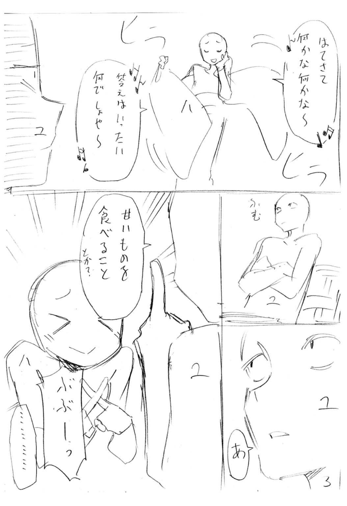

| 文句の付けようがないラブコメ 3 | |
| 鈴木大輔 | |
この本は縦書きでレイアウトされています。
また、ご覧になる機種により、表示の差が認められることがあります。
 ダッシュエックス文庫DIGITAL
ダッシュエックス文庫DIGITAL
文句の付けようがないラブコメ ３
鈴木大輔
第九章
神鳴沢世界が学校に来なくなり、梅雨が明け、そして夏が来た。
†
〝九十九機関という名前に心当たりは？〟
その質問に兄が首を振ってくれて、桐島春子はホッと胸をなで下ろしたものである。
（まずは一安心ですか）
彼らの手がまだ伸びていないのであれば、とりあえずは御の字といったところ。守ろうとしている兄に危害が及んでは本末転倒だ。
四月の初め。
私立叢雲学園に転入してきた白髪女のことを、春子は徹底的に調べ上げた。
最初は気軽に考えていた。
兄・桐島優樹に近づく女はいくらでもいる。どうせ今回もそのうちの一人であり、叩けばいくらでもホコリが出てくる。最終的には脅しをかけるなり金を握らせるなりして追い払えば作戦終了――そんな風に高をくくっていた。
（わたしもまだ修行が足りない、ということでしょう）
桐島家の庭園。木陰に出したテーブルでレポートに目を通しながら春子は反省する。
Ａ４サイズのファイルに記されているのは、神鳴沢世界なる女の得体の知れなさと、それ以上に不気味な九十九機関という組織の危険さについてだ。
（頭が痛いですねこれは）
眉間をもみほぐしながら小学六年生の少女はため息をつく。
うっかり踏んでしまった地雷といかなる距離感で付き合っていけばいいのか。桐島春子はまだ決めかねている。
†
「......なのでお兄さま。あの白髪女に関わるのはいいかげん止めてください」
「いやだ」
兄の返答はかたくなだった。
「俺は学級委員であいつはクラスメイトなんだから。俺があいつの面倒を見るのは普通のことだろ？ 誰かにとやかく言われる筋合いじゃない」
「それはそうかもですけどー」
ふくれっ面をする春子だが、優樹は意に介さない。
桐島家の敷地にある道場で黙々と型の稽古をこなしながら、ひたすら汗を流している。
「でもでもお兄さま」
なおも春子は食い下がる。
「あの神鳴沢世界という人は明らかに普通の人とちがうわけで。それはお兄さまもわかっているはずで。だったらですね、もう少しこう、いろいろ気をつけてもいいんじゃないかと思うわけです」
「ちゃんと気をつけてるよ」
腰を落とし、じっくり呼吸を練りながら優樹は言う。
「あいつはとにかく目立つヤツで、そのくせ社会経験ってのが全然ないから。普通に学校に来て普通に馴染むまで時間が掛かるんだよな。だから今度はもっとちゃんと根回ししとくつもりだよ。小岩井さんにも助けてもらってさ」
「いえお兄さま、そういうことではなくてですね......」
「あ、それといちおう言っとくけど。もうやるなよ春子？ もうあいつの靴を隠したり、周りのやつらを煽って敵対させたりすんなよ？ 一度目は許すけど、二度目があったらお兄ちゃんぜったい許さないからな？」
「............」
春子はため息をついた。
これである。
兄は白髪女のことになるとすっかり盲目になるのだ。本来は聡明な人であるはずなのに。まったくもって恋とは厄介な。
そう恋。
なんという忌まわしい単語であろう！
あろうことか愛する優樹お兄さまは、どこの馬の骨とも知れぬ白髪女に思いを寄せているらしいのだ。まったくもって世も末である。兄妹がお互いに向ける淡い気持ちだけを恋と呼ぶべきなのに。
（まあ仕方のないことではありますね。お兄さまがのほほんとしているのも）
なぜなら春子は伝えていないのだ。
九十九機関がどんな組織であり、いかにして彼らに関わらないよう努めるべきなのかを、彼女は兄に語らなかった。
語るどころか先日以来、九十九機関の名前を出したこともない。口の端に上らせることさえ避けているのだ。まるで呪いの言葉を忌むように。
「そんじゃ春子」
一息つき、優樹が笑顔を向けてくる。
「ちょっと付き合ってくれるか？」
「......はぁい」
しぶしぶ春子は立ち上がる。
優樹と同じく、彼女も道着姿だ。
ふたりの型稽古が始まった。
ゆるやかで流れるような動き。日本武道とも中国拳法とも微妙に異なる、武道というよりは演舞の稽古のような、一見すると派手さのかけらもない組手だが、
「春子」
「はい？」
「なんか腕を上げてるな。しばらく見ないうちに」
「お兄さまこそ。相変わらずムチャクチャに見えて理に適った動きですよね」
一事が万事そういう兄だった。
筋のいい師匠から教わっている春子と異なり、優樹は我流である。
そうせざるを得なかったのだ。
優樹が生まれつき持っている素質が、既存の流派や理論とあまりにもそりが合わず、何人もの師匠に匙を投げられたから。お前はお前の道を行け、それ以外にやりようがない、教えようがないと。
（そのくせ強いのだから困りものです）
もっともおかげで少しは安心できる。
たとえ九十九機関が兄に手を出してきたとしても、五人や十人なら問題ない。その程度であれば簡単に返り討ちにすることだろう。命まで狙ってくることがあればむしろ御の字だ。その方が遠慮なく全力を出せるだろうから。
つまり桐島優樹の強さとは、そういう類の強さなのだ。
まったくもって不可思議な素質であった。言うなれば、まるで進化の過程をすっ飛ばしてしまったような。あるいは人の理から外れてしまっているような――
「それを言うならお前もだろ春子」
笑って優樹が指摘する。
「こうやって普通に俺と組手してるし、悪巧みも大人顔負けだけど。お前ってまだ小学生だからな？」
「なにも不思議なことはありませんよ」春子はうそぶいた。「お兄さまへの愛さえあれば妹は何でもできるんですから」
「......お前はブレないなあ」
稽古を終え、互いに一礼する。
「なんにせよ」
汗を拭いながら兄は苦笑いして、
「今回だけは見逃してくれると助かるんだけどな」
「......それはつまり」
春子は声音を怖くして、
「白髪女に関わるのを止める気はない、と？」
「うんまあ」
頭をかく優樹。
「お前が止めろって言ってるんだ。それなりの理由があるのはちゃんとわかってる。でも今回だけは、な？」
「小岩井来海の時もお兄さまは同じことを言いました」
「小岩井さんは別に危なくもなんともないだろ？ お前言ってたよな？ さんざん調べたけど何もやましいところは出てこなかった、って」
「それはまあそうなんですが......」
くちびるを尖らせる春子。
優樹はさらに勢い込んで、
「ここで引いちゃいけない気がするんだよ。なんか妙にそう思うんだ。なんでそう思うのかはわからんけど。あいつのそばに、神鳴沢世界のそばにいてやりたいんだ俺は。あいつのことを放っておきたくない」
「......お兄さま」
「うん？」
「そんなにあの白髪女のことが気になるのですか。なんだかまるで、今にもあの女にプロポーズでもしそうな勢いじゃありませんか」
「いやいや。まさか。そんなことは。うん」
「でも少なくとも、あの女のことをものすご―――く気に掛けているのは間違いありませんよね？」
「うん。それは認める」
「......ううう～～～っ」
「怒るなって」
「いいえ怒ります。春子はこんなにお兄さまによくしているのに。言うことをちゃんと聞くいい妹なのに。こうしてお稽古にも付き合ったのに」
涙目で眉をつり上げる妹に、優樹は困り顔をしていたが、
「わかった。じゃあごほうびをあげよう」
「ごほうび？」
「今日は春子の言うことを何でも聞いてあげる日にするよ。スーパースペシャル甘やかしデーだ。さあどうだ。これでどうだ」
「スーパースペシャル甘やかしデー......」
春子の目に光が戻ってくる。
「それは本当ですか？」
「本当だ」
「なんでもしてくれるのですか？」
「なんでもするよ」
「頭は撫でてもらえますか？」
「もちろん」
「抱っこはしてもらえますか？」
「お安いご用だ」
「食事の時はあーんをしてもらえますか？」
「春子がそうしたいならがんばろう」
「お風呂にもいっしょに入ってくれますか？」
「前向きに検討したいと思う」
「いっしょのお布団で寝てくれますか？」
「むしろ俺の方から言い出そうと思ってたくらいだぜ」
「結婚してくれますか？」
「それは無理」
即答だった。
春子は「むうう」と唸った。しかし機嫌が直ってしまったことは隠せない。
「頼りにさせてくれ」
と優樹は頭を下げる。
「こういう時に頼れるのはやっぱお前なんだ。わがままばっかの兄貴ですまんけど、これからもよろしく頼む」
「......仕方ありませんね」
苦笑いする春子だった。
この流れでノーと言える彼女ではない。
「今までもこれからもずっと、春子はお兄さまの春子です。だからなんでも言いつけてくださいね？ なんでも聞いてあげますから。お兄さまのためにわたし、いつだって全力を尽くす所存です」
胸に手を当て、誠実に太鼓判を押したのだった。
......そう。
彼女は何も伝えていない。
神鳴沢世界とその周囲を調べるにあたって、すでに五人が行方不明になっていること。九十九機関の手は兄にこそ伸びていないが、春子にはとっくに伸びていること。
（まったくもって頭の痛い......）
眉間をもみほぐしながら小学六年生の少女はため息をつく。
うっかり踏んでしまった地雷と、どんな距離感で付き合っていけばいいのか。桐島春子はまだ決めかねている。
†
一方、優樹はといえば。
彼は彼で、傍から見えるほど穏やかなわけではなかった。
妹の言動からキナ臭いものを感じ取り、善後の対策を考えている、というのはもちろんだが。それ以上に引っかかっていることがある。
（どうなるんだろうな、俺のプロポーズって......）
あの日の保健室。
神鳴沢世界が学校に来た最後の日。
結婚を申し込んだ。
優樹にとっては自然な流れで、だけど優樹以外の誰から見ても不自然な流れで。つい言ってしまったのである。『神鳴沢世界さん。俺と結婚してくれませんか』と。
（いやー。さすがにアレはなあ......）
肝っ玉は据わっている部類に入る優樹だが、それでもつい乾いた笑いがもれてしまう。
なぜあんなことを口にしてしまったんだろう？
（やるならもっとちゃんと、確実にイエスをもらえるように段取りしておかんとダメだよなー。いやほんとミスったわ）
妹が聞いたら憤慨しそうな反省を、優樹はしていた。プロポーズそのものについて彼はまったく後悔していない。
だってそうだろ？ と思うのだ。
あんなに綺麗でスタイルもよくて、小動物みたいで保護欲をかき立てられて、自信家のくせに泣き虫で、感情豊かでいろんな表情を見せてくれる女の子を、好きにならないヤツがいるのだろうか。
おまけに彼女は優樹のために戦ってくれた。わたしの友人をけなすのは許さないと、堂々たる態度で言い放ってくれた。優樹よりも彼女自身の方が悪い立場に立たされていたにもかかわらずだ。
結婚を申し込むにこれ以上ふさわしい相手が、果たしてこの世に存在するか？ 地球上はもちろん、宇宙の果てまで探してもそんな相手は見つからない。
そう。プロポーズに後悔はない。
これは紛れもない本音なのだが。
†
「お引き取りくださいませ」
メイドさんはその日もそっけなかった。
八月の某日。
神鳴沢家のエントランスは遠慮を知らない太陽に炙られて、うだるように暑い。
「何度来ても同じです。貴方様と我が主を引き合わせるつもりはありません」
「そこをなんとか。七月からずっとあいつに会ってないわけですし」
「今は夏休みです。クラスメイトと顔を合わさないのは普通のことでしょう？」
「いやいや。俺とあいつの仲ですから。なのでそこをなんとか」
「お引き取りくださいませ」
「まあまあそう言わず」
今日もいつものやりとりが続いている。
先日来、来る日も来る日も。優樹とおチヨにとってもはや日課と言うに近い。
「もう百回ぐらい同じことを言っていますが」
メイドさんは笑顔を崩さず、淡々と繰り返す。
「ご存じの通り、ただでさえ我が主は丈夫な方ではありません。身体も心もです」
「ええハイ。それはもう重々」
「しかも大変にシャイな性格をしていらっしゃいます」
「その点はもう、ええ。もちろん。重々に」
「そこへ貴方様が不用意に、突発的に、何の準備もなく、前振りも根回しもなく、プロポーズする暴挙に出たわけです」
「は、ども。恐縮です。そこはもう。ええ」
「つまりぜんぶ貴方様のせいです」
「まったくもって」
「なのでお引き取りくださいませ」
「そこをなんとか」
セミがぎゃんぎゃん鳴く。
ヤブ蚊が二の腕を吸う。
後から後から汗がにじみ、風は一ミリも吹かない。
「どうすれば分かってもらえるのでしょう」
微笑みながらおチヨが首をかしげる。
ロングスカートに長袖のメイド服という暑苦しい格好だが、汗ひとつかかない涼しい顔だ。
「毎度毎度、こうしてわたしは懇切丁寧に門前払いしているのですが。貴方様は毎日毎日毎日毎日、こりもせずに現れます」
「いや、ども。恐縮です」
「ひょっとして話が通じていないのでしょうか」
「いや通じてます。でもそこをなんとか、という感じで」
「なんともならないと申し上げています」
「と言いつつなんとかなるんじゃないか、と思ってます」
「堂々巡りですね」
「そうなんすよ。なのでループしまくってる現実を変えてみませんか？ ここらで一発」
「............」
おチヨが黙った。笑顔のまま。
優樹も黙る。愛想笑いのまま。
セミはぎゃんぎゃん。ヤブ蚊が今度は首すじに。
「いつもなら」
ふたたび口を開く優樹。
「そろそろ問答無用で追い返されるところですよね」
「ええそうですね。まるでサッカーボールをドリブルするように」
「ていうか強いですよねおチヨさんって。ちょっと護身術を囓ってる、というレベルじゃなさそうなんですけど」
「いえいえ。わたしなどはとても」
「いやいや。見てりゃわかりますよ。いちおう見る目はあるつもりなんで」
「いえいえ。きっと節穴でございますよ」
「んで、それはそれとしてですね」
優樹は愛想笑いをやめて、
「今日はなんで問答無用で追い返されないのかなー、みたいな？ ひょっとしてそろそろあいつに会わせてくれるんじゃないかなー、的な淡い期待が」
「わたしもいいかげん面倒になってきましたので」
おチヨは笑顔を崩さない。
「ここらで決着をつけようかと。つまりドリブル以上のことをやってあげようかと思いまして、ええ。そうして骨の一本や二本も折っておけば、しばらく大人しくして頂けるのではないか、という淡い期待があるのですよ」
「いやいやそ」
次の瞬間。
メイドさんの笑顔が視界から消えた。
と同時。優樹の身体がズドンと吹き飛ぶ。五メートル。いや十メートル。ずざざざざ、ごろんごろんごろんと門を抜けて道路までまろび出る。お向かいさんの屋敷の壁に当たってようやく止まる。
「......痛ー」
上下逆さまにひっくり返ったまま優樹はうめき、うめきながら横っ飛びに跳ね起きる。
直後。
疾風が巻き起こり、今し方まで優樹がいた場所に蹴り足が現れる。黒のローファーに白いストッキングの細足がうなりをあげて空を切る。
「待って待って！」
優樹は悲鳴をあげる。
十分に距離を置いてから両手を挙げる。
「やめましょホント。こういうのは。意味ないですってマジで」
「............」
優樹を見るおチヨ。微笑みは変わらず。
「今のを避けますか。わりと手加減なしだったのですが」
じりじりと歩み寄る。優樹はそのぶんだけ退く。
いつの間にか蝉の鳴き声は止んだ。通りに人影はない。
「優樹様。貴方様は何者なのです」
「いや何者かと言われましても......」
「普通じゃありませんね。異常です。ちょっと人間とは思えません」
「いや人間なんですが。普通に」
「普通の人間なら最初の蹴りで死んでますよ。なのに貴方様は生きてらっしゃいます」
「いやいやいや」
退きながら優樹は冷や汗をたらす。
訳がわからない。
おチヨがいきなり襲ってくることも。想像をはるかに超えたその技量も。骨の一本や二本と言いつつ死なす気満々なのも。
「わたしから見て」
おチヨは慎重に間合いを詰めてくる。
詰めながら口を開く、
「貴方様はずいぶんとイレギュラーな存在に思えます。どうにも解せない点が多すぎる」
「と、言われましても......」
「我が主が転入した学校にたまたま在籍していた、というだけならまだしも。コミュニケーションの下手なあの方と短期間のうちに親しくなったのみならず、あまつさえプロポーズまでするわ。殺すつもりの蹴りもあっさり避けるわ。これらをすべて偶然で片付けるのは無理があるかと」
偶然かどうかはともかく運はいい、と優樹は思う。とっさの判断で後ろに跳び、初撃の威力を殺せたのは御の字だが、今でも冷や汗は出っぱなし。内臓破裂どころか背中まで貫通しそうな蹴りだった。
だが生きている。まだかろうじて。
それをイレギュラーと呼ぶならまったくもってそうなのだろうが――
びょう！
巻き起こる疾風。
そして突進。
スカートをなびかせておチヨが放つ蹴り、肘、そして膝。触れただけで首がもげそうなそれらを優樹は紙一重でかわしていく。今度は不意打ちじゃないし間合いも離れている、それでもなお肝の凍る連撃。
妹に感謝だ。
彼女と稽古を重ねて一ヶ月。その準備運動がなければとっくにあの世行きだった。
（勘弁してくれマジで！）
悲鳴を上げる間もないから心で叫ぶ、
（あいつに会いたいだけなんだよ俺は！）
蹴り。
突き。
掌打。
抜手。
蹴り。
蹴り。
蹴り。
肘、膝、蹴り、突き、蹴り、掌打、蹴り、抜手、蹴り、突き、肘、膝、蹴り、蹴り、肘、膝、蹴り、突き、掌打、蹴り、抜手、蹴り、突き、抜手、蹴り、突き、肘、膝、抜手、蹴り、突き、肘、膝、突き、掌打、蹴り、抜手、蹴り、膝、突き、掌打、蹴り、抜手、蹴り抜手蹴り突き肘突き掌打蹴り抜手蹴り抜手蹴り突き肘突き掌打。
......長い時間ではなかったはずである。
がしかし、優樹には無限のそれにも感じられた。
何度も何度も躱し、交しつづけて。ようやく鬼メイドの動きが止まった。
「......参りましたね」
間合いを離し、仁王立ちで優樹に語りかける。
笑顔は変わらぬまま。呼吸ひとつ乱れていない。
「これだけやって一撃も入りませんか。お見それいたしました」
「どういたし、ま、して」
息を切らせ、片膝をつきながら優樹は応じる。白旗を揚げてくれたのは向こうだが、勝ち誇る気にはとてもなれない。
本当の本当に本気であれば。逆の形で決着がついたはずだ――そこらじゅうの壁やらアスファルトやらが爆撃を受けたみたいにえぐれているのを見回して、あらためて冷や汗をかく。なんかここら一帯だけ世界観おかしくないか？ つーか誰が弁償するのアレ？
「生きてるのが、わりと、奇跡です。ほんとに」
必死こいて呼吸を整えながら、
「それで？ テストは合格ってことでいいんでしょうか？」
「テストとは？」
「いやなんていうか」
眉をハの字に下げて笑う優樹。
「そういうのが王道のパターンですよね？ 命がけの戦いをしたあとで『中々やるな』『お前もな』みたいな感じでお互いを認め合う、みたいな」
「そんな風に考えていたのですか」
「ええまあ」
「それで一切の反撃をしてこなかったと？」
「そんな感じで」
「お気楽なことです。呆れて物も言えません」
「でも実際そうでしょおチヨさん？ 俺の考え方、たぶん間違ってないと思うんですけど」
「そう思う根拠は？」
「毎日会ってくれたからです」
構えを解き、歩み寄りながら優樹、
「こりもせずよくぞ毎日、みたいなこと言ってましたけど。それっておチヨさんも同じなんですよね。こりもせず毎日俺に会ってくれたわけです」
「............」
「会ってくれないし顔も見せないし話もしない、みたいな感じだったら、俺だって毎日は来ないです。別のやり方を考えます。でもそうじゃなかったので。だったら見込みはあるんじゃないかと」
「............」
「というわけで俺、合格できましたか？ 門前払いしなくても済むだけの価値、ありそうな感じです？」
「......貴方様の」
にっこり笑いながらおチヨは吐き捨てる。
「そういうところがわたし、好きじゃありません」
「でも認めてはくれる？」
「ふむ」
吐息する。
それからしばし、何事か思案していたおチヨだったが、
「......気は進みませんが渋々ながら。やむを得ない感じで。我が主の『事情』にこれ以上の首を突っ込むだけの価値が貴方様にあると認めます」
「あざっす」
「ただしあくまでも仮に認めただけです。貴方様が自らの株を下げた場合は、遠慮なく寝首を掻かせていただきますので、その際はどうぞご容赦くださいませ。ええご心配なく、ちゃんとお墓ぐらいは建ててあげますから」
にっこり。
背筋が寒くなる完璧スマイル。
だけど優樹も慣れた。いつまでもやられっぱなしじゃいられない。ささやかながら反撃を試みる。
「そういうの向いてませんよね、おチヨさんって」
「？ 向いてないとは？」
「そうやって悪役っぽい感じ、嫌われ役っぽい感じでキャラ作ってるところがです。つらいですよねそういうの。だってほんとはいい人ですもんね」
「............」
おチヨは一瞬だけ目を丸くした。
それからとても嫌そうに顔をしかめた。
してやったり――優樹は内心でほくそ笑む。前々から疑っていたことをバクチ気味に投げてみたのだが、どうやらビンゴだったらしい。やっとこれで一本返せた。
不思議なもので、取って付けたようなメイドの笑顔もこうなると可愛いものに思えてくる。彼女にもいろいろ事情があるのだろう。二十歳ほどの見た目に似合わぬ老成感、異常な手練れっぷり、主とふたりだけで暮らしていること――あえて訊きはしないが、決して苦労は少なくないはずだ。
「たわごとは聞き流すとして」
隙を見せたのはほんの数秒のこと。
すぐに完璧スマイルを取り戻しておチヨは促す。
「立ち話も何ですからまずはこちらへ。価値があると認めた御方にはお茶のひとつもお出し致しましょう。アールグレイのとっておきがございます」
「そりゃどうも。ありがたく」
優樹も笑顔を返す。こちらは会心の笑みだ。
なにせ、やっとのことで鉄面皮メイドに一泡吹かせたのである。ちっとも慣れてくれなかった野良猫が、ようやく膝の上に乗ってくれたような。死にそうな思いで逃げ回った甲斐があったというものだ。
そしてようやく会える。
神鳴沢世界に。結婚を申し込んだまま宙ぶらりんになっている相手に。これでやっと、なにがしかの答えを聞くことができる――
「ところで優樹様」
門扉を開けながらおチヨが振り向く。
「もろもろお話する前に、あらかじめお断りしておきたいことがございます」
「ええどうぞ。なんでも言ってください」
胸を張って優樹はうなずく。
「あいつにいろんな事情があるのは見てりゃわかります。でもそういう事情もぜんぶ引っくるめて結婚を申し込んだんですから。今さら何を聞いたっておどろきませんよ」
「それはようございました」
こちらも笑顔でうなずきながらおチヨ。
「さすがは優樹様です。そのような御方なればこそ、わたしも安心して我が主をお任せできるというもの」
「どんとこいです。......んで？ お断りしておきたいことってのは？」
優樹は訊いた。
おチヨは過去最高の完璧スマイルでこう言った。
「我が主はですね。じつは神様なんですよ」
「............。はい？」
桐島優樹、十七歳。
あっけなく一本取り返された瞬間だった。
第十章
神鳴沢世界は不機嫌だった。
それもとびっきりに。
「おチヨ」
「なんでございましょう」
「貴殿はクビだ」
神鳴沢家の応接間。
ビロード張りのソファーに足を組んで座り、銀髪の少女は高らかと宣告する。
「今すぐ荷物をまとめてここを出ていけ」
小刻みな貧乏ゆすり。肘掛けに置いた人差し指をとんとんとんとん叩いて、苛立ちを隠そうともしないご様子である。
「五分以内にだ。いいや五秒以内にだ。そして今度の今度の今度こそ」
「ということでございますので」
怒りに震える主をさえぎっておチヨが笑顔を作り、
「わたしはこのあたりで失礼いたします優樹様。あとのことはお任せいたしますので、どうぞお達者で」
そそくさと退場していった。
おかげで優樹はふたつのことに気づくことができた。
神鳴沢世界が神であると明かしたのは、暴虐メイドの独断であったこと。
そして神鳴沢世界の怒りっぷりをみるに、どうやら彼女が神様だという話は本当のことらしい、ということ。
「あの腐れメイド......！」
怒りを通り越し、世界は顔面蒼白であった。
「ぜったい許さない......よりにもよって優樹に話すとは......というかそれ以前に......いや今はそのことはいい。いいのだがしかし......」
絶望。当惑。焦燥。
その他もろもろの感情が入り交じり、世界の表情はいわく言いがたいマーブル模様に彩られている。これまで彼女は何度もおチヨに対して怒りを示していたが、今回は別物だ。かつて教室全体を敵に回して放言した時ともまた異なる。
「ええとだな優樹」
消え入りそうな声で。
うつむき加減の上目づかいで。
「おチヨはだな。実はちょっと頭が残念な女なのだ」
「............」
「なので、あやつの言うことを信用してはいけない」
「............」
「あやつの言うことよりも、貴殿はわたしの言うことを信じてくれるにちがいない。そうわたしは信じている。うん。というわけでつまりだ。おチヨの言うことはぜんぶ嘘っぱちなのであってな――」
「............」
世界は明らかに恐れていた。
何を？
それはわからない。いやわかる気もするが、正確なところまでは優樹にはわからない。おチヨをして認めさせるだけの腕っぷしはあっても、しょせんは神ならぬ身だ。
ただひとつハッキリしていることがある。彼女は何かを恐れている。バレバレと承知で、それでもなお嘘をつこうとするほどに、何かを。
「............」
優樹はじっと見つめる。
あくまでも真っ直ぐに。決して押しつけがましくならないように。
「............」
世界は弁明をやめ、居心地悪そうにもじもじしている。
「なんつーか」
あごをなで、頬をぽりぽり掻いてから。
優樹は切り出した。
「まずこれだけは言っときたいんだが」
「な、なんだろうか？」
「俺が聞きたいのはプロポーズの返事なんだな、ぶっちゃけ」
ぱちくり。
世界が目をしばたたいた。
「イエスでもノーでも、とにかくそれだけ聞ければさ。宙ぶらりんの状態は終わるわけで。今んところ俺が欲しいのはそれだけなんで、それ以外のことはどうでもいいっていうか」
「どうでもいい......？」
たちまち切なそうな、苦しそうな顔をする世界。
あわてて優樹はフォローする、
「いやこれだと誤解されそうだな。どうでもいいってのはつまり、ぜんぶ受け入れるつもりだから、ってことでさ。お前が神様だろうと悪魔だろうと、最終的にはあんまり関係ないだろ、みたいな」
「受け入れる......？」
「うん。だって好きだから俺。神鳴沢のこと」
「――――っ!?」
ぼっ、と音を立てて世界が赤くなる。
言ってる優樹もつい、つられて赤くなる。
「いやすまん。ちょっとストレートすぎた。悪い癖なんだよこれ。俺の」
「～～～～！ ～～～～っ！」
「だからそうキョドらないでもらえると助かるっていうか。とりあえず落ち着こうぜ？ そんな金魚みたいに口パクしてないでさ。ほら深呼吸しよう深呼吸。すーはーすーはー......ほれやってみ？」
「......すーはー。すーはー」
世界は素直だった。
優樹が呼吸するのに合わせ、吸ったり吐いたりする。ふたりしてリズムを合わせる音だけが部屋にひびく。
「んで」
優樹は話を続ける。
「そういう意思表示だけしておいてだな。ちょっと話は変わるんだが」
「う、うむ」
「これは別に問い詰めたりするわけじゃないんだけどさ。なんで会ってくれなかったんだ？ 学校にも来てくれんかったし」
「......貴殿がそれを言うか？」
「自覚はあるんでそこは許してくれると助かる」
「むぅ」
少しくちびるを尖らせる世界。
その様子を見るに、いくぶん余裕を取り戻したようだ。
「正直なところ」
ふたたびもじもじしながら言う、
「今日こんなことになるとはまったく想像していなかった。だから貴殿とこうして会うだけの覚悟は決まっていなかった。腐れメイドが勝手なことをしなければ、わたしは今も引きこもっていただろう」
それから上目づかいに、
「どこまで聞いたのだ？」
「ていうと？」
「おチヨからいろいろ聞いたはずだ。何をどこまで聞いたのか知りたい」
「えーっとだな」
優樹は話して聞かせた。なるべく詳しく。
世界に面会するまでの間に、クビになったメイドは多くのことを語ってくれた。
彼女が神様であること。
外界との接触を断って孤独に生きてきたこと。
千年の永きにわたり、この世を守護し続けてきたこと。
たったひとりで務めを果たしてきたゆえ、身体が弱ってきていること。
......にわかには信じがたい話だったが、信じてもよさそうだった。というか信じる以外になかったというべきか。
その方がいろいろ頷けることが多いのだ。人間離れした見た目や雰囲気。コミュニケーション能力の不足。屋敷の外に出て子供みたいに新鮮な感動を示していたこと。
「やはりしゃべったのだな。あの腐れメイドめ」
舌打ちする世界。
「すまない優樹。本来なら貴殿に明かすつもりのないことだった。許してほしい」
「いやぜんぜん」
優樹は首を振って、
「つーかむしろ『なんで？』って感じ。教えてくれてもいいじゃん別に」
「......軽く言ってくれるがな貴殿」
「想像はついてるつもりだよ」
さえぎり、
「お前はこの世の中をひとりで守ってる神様なんだろ？ だったらいろいろ面倒なことがあるに決まってるじゃん。楽な仕事じゃないだろうし、うさんくさい取り巻きなんかもたくさんいるだろうし。だからおチヨさんみたいなのがいて、お前を守ったりしてるんだろ？」
「まあ、うむ。確かにそうなのだが」
「んでさっきも言ったよな？ 神様だろうと悪魔だろうとお前はお前だ。俺はお前をぜんぶ受け入れる」
「......軽く言ってくれるがな貴殿」
「そう聞こえたんならすまん。直球勝負しかできないんだわ俺」
「ふむ」
世界は苦笑した。
悪いニュアンスの苦笑ではない。しつけのなってない犬が来客に飛びついて顔を舐め回すのを見るような。そんな感じ。
「なんだか気が抜けてしまったよわたしは」
と言って、世界はティーカップに口をつけた。
クビになったメイドが淹れてくれた最後のアールグレイである。......いや、おそらくは最後にはならないだろうが。
「今日まであれこれいろいろ考えてきた。貴殿から結婚を申し込まれて、ほんとうにいろいろなことを」
「うん。そうだよな」
優樹は神妙にうなずく。
「わたしでいいんだろうか、とも考えた。そもそも付き合いが短すぎるのではないか、とも考えた」
「うん。それもわかる」
「それにわたしは神だ。果たして結婚などしてもいいのかどうか。それに貴殿はまだ若くて、わたしはもういい歳のおばあさんだ。それを考えるとやっぱりためらいを覚えてしまう。たぶん貴殿はそんなこと問題にしないのだろうが」
「うん。問題にしないな」
「で、そんなことを考えていたらだな。だんだん頭がこんがらがって、もうにっちもさっちもいかなくなって、身動きが取れなくなってしまったのだ。貴殿と顔を合わせることができなかったのはそのためだ」
「うん。なるほど」
「学校に行かなくなったのもそれが理由のひとつだ。まあ他にも理由はあるのだが」
「うん。だよな」
相づちを打ちながら優樹はそわそわする。
雰囲気は悪くない。世界の表情もやわらかい。どちらかといえば期待の持てそうな感じは伝わってくる。
だけど彼女が本当に神様だったとすると、大幅にハードルが上がるのは間違いないわけで。ただでさえ問題は山積みであるからして。
「そもそも結婚生活というのは何をどうすればいいものなのだ？ どこかに家を建ててふたりで住めばいいのか？ それから子供を作って末永く幸せに暮らすのか？ しかしわたしは神であるからして、あまり好き勝手をしていい身分ではないのだぞ？」
「そこはまあ、これからお互いに話し合ってだな――っていうか」
ぼちぼち限界だった。
頭をかき、天井の模様を眺めながら、
「えーとだな神鳴沢」
「うん？」
「ただでさえお預け食らってるんでそろそろきついんだわ。急かすようで悪いんだけど、そこは勘弁してくれ」
「......？」
「あのさ。返事はどんな感じになるんでしょうか」
「何の？」
「何の、って訊かれるとちょっとキツいものがあるんだが。いやだからなんつーかその。この間のプロポーズの」
「............」
世界はキョトンとした。
キョトンとしたいのは優樹の方だった。
さすがにこれは焦る。何かおかしなことを口走ってしまったのか？ いやいやまさかそんな。ごく真っ当なことしか言ってないはずだろ？
「返事は？ と言うがな貴殿」
おずおずと申し出る世界。
「答えはとっくに出しているはずだぞわたしは」
「え？」
「だってそうであろう？ わたしは確かに言ったはずだ。『はい。よろしくお願いします』と」
「............」
今度は優樹がキョトンとする番だった。
あわてて記憶を検索する。なるほど確かにそんなセリフがあった。そして優樹は肯定的な受け取り方をした。
そう。確かにそうなのだが。
「いや。でもさ神鳴沢さん」
「うん？」
「確かにそういう流れだったけどさ、でもさ。あの時のお前って、だいぶ戸惑ってたっていうか、つい何も考えずにイエスって言っちゃったみたいな。そのことにめっちゃ困ってるみたいな。そんな感じじゃなかったっけ？」
「うむ。そのとおりだ」
「しかもその後は、逃げるみたいに帰っちまったし」
「うむ。その節は失態を見せてしまった。面目ない」
「......ということがあったもんですから。俺としては、まだプロポーズの返事はもらってない、的な認識だったんだけど」
「とはいえわたしは別に、嫌だと言った覚えはないのだが」
「あー。うん。それは。まあ。そう言われてみれば」
優樹は首をかしげる。
世界も首をかしげる。
「なあ優樹よ」
「おう」
「なにやらわたしたちふたりの間に誤解が生まれているような。そんな気がする」
「うん。俺もそう思う」
「ちなみにわたしはだな。貴殿がこうしてここを訪れたのは、結婚に関する具体的な話を進めるためなのだと。そう考えていた。だけどさっきも言った通り、わたしは神であるし、いい歳のおばあさんだし、立場というものもあるから。貴殿の望みにどこまで応えられるかとても不安で――」
「え？ そういう話なの？」
「え？ そういう話ではなかったのか？」
優樹は首をかしげる。
世界も首をかしげる。
「なあ優樹よ」
「おう」
「ウエディングドレスは何を着るべきかとか、新婚旅行はどこへ行こうかとか、子供は何人作ろうだとか。わたしはそういうことばかり考えていたのだが」
「うん」
「もしかして今日ここで身体を求められたとしてもだな、断る理由を見つけることができなくてだな。それでかなり焦っていたのだが」
「うん」
「貴殿はそういうことを考えてはいなかったのか？」
「うんまあ。なんせプロポーズの答えはもらってないつもりだったんで。俺の中では」
「そうするとだな」
世界はポカン顔のまま。
淡々と問いかけを投げる。
「ひょっとしてわたしは、ひとりで先走ってしまったのだろうか......？」
「いやお前は悪くないぞ」
優樹はフォローする、
「元はといえばぜんぶ俺のせいだし。あんな場所のあんなタイミングでプロポーズした俺がアホだったんだし。それでなんか色々ややこしいことになったんだし。だから気にすることはないんじゃないかな。いやこれはマジで」
「............」
フォローは不発に終わった。
むしろ逆効果だった。
ポカン顔のほっぺたがゆっくり染まっていく。
それはそれはもう、見る間に染まっていく。たちまち肌色の部分が駆逐され、りんごみたいな朱色に変わる。
「はうあ......」
ポカン顔がくしゃくしゃになる。
そのまま世界はソファーの上で体育座りになる。
傍にあった膝掛け毛布をかぶって丸くなる。
「は」
毛布の中からかすれ声が聞こえる。
「はずかしい......はずかしすぎる......」
「えーと。神鳴沢？ さん？」
「わたしはもうおしまいだ。こんな失態をさらしてはこの先もう生きていけない。このまま消えてしまいたい。海の藻屑になりたい」
「うーん......」
それは困る、と優樹は思った。
海の藻屑になられると、プロポーズが台無しになるじゃないか。
「よし。じゃあこうしよう」
優樹はひとりうなずいた。
それから毛布に手をかけて一気にはぎ取る。
「――――!?」
バリケードを失い、涙目の世界があらわになる。
そのまま彼女を抱き寄せた。
「 」
固まった。
優樹のふところに包まれて、神鳴沢世界は時間を止めている。目を丸くしてぴくりとも動かない。いや動けない。
ただでさえ真っ赤なほっぺたが限界を超えて色づいていく。
「ゆ」
時が動き出す。
わなわな震えるくちびるがどうにか声を発音する。
「ゆ、ゆ、ゆ、ゆ、ゆう、ゆ、ゆう」
「なんつーか」
さえぎって優樹は弁明する。
「消えてしまわれると困るんで。だったらこうしとけば離れないだろ的な」
「............！」
「いやすまん。なんか言ってて恥ずかしくなってきた」
優樹の顔もだんだん赤くなってきた。
決まり悪そうな顔で、だけど包み込む腕は離さない。
「いちおう言っとくけどさ。冗談とかじゃないから。結婚の話」
「............」
「俺はまだ高校生だし、お前と出会ってからちょっとしか時間も経ってないけど。それでも本気なんで。前言撤回するつもりもないんで」
「............」
「つーかもう、これも勢いついでに言っちまうけどさ。俺は命をかけてお前を守りたい。ウエディングドレスのことも新婚旅行のことも子供のことも考えてなかったけど、お前と末永くずっと幸せに暮らしたいと思う」
「............」
「まあ具体的に何をどうこう、ってのは、俺もまだ若造なもんで。まだちゃんとは考えてないんだけどさ。でもそういうのもぜんぶ込みでお前といっしょにやっていきたいんだ」
「............」
「そんだけ俺、お前のことが好きなんだ。なんかそうなっちまったんだ。自分でもびっくりだけど」
「............」
腕の中が大人しくなったのを確認して、優樹はそっと離れる。
世界は真っ赤なまま、呆けた様子で優樹を見ている。その潤んだ瞳がかろうじて焦点を結んでいる。
「てことでもう一度言わせてくれ。――神鳴沢世界さん。俺と結婚してください」
「............っ」
両の手のひらで顔をおおった。
そのまま首を左右に振る。何度も何度も。
「えーと。嫌？ だったか？」
世界は首を振る。さらに激しく。
「う」
そして涙声でしぼり出す。
「うれしい......うれしすぎる......どうにかなってしまいそうだ。優樹。わたしはどうにかなってしまいそうだよ」
「そか。それは......よかった。うん。ほんとに」
「これまで生きてきて、こんな、こんな幸せが......想像さえしなかったよわたしは......本当に、本当に......まさかこんな......」
ぐずっ、と。
ひとつ洟をすすり、世界は居住まいを正す。
「優樹よ。わたしももう一度こたえよう」
笑顔が咲く。
可憐なカスミソウのような、同時に大輪のバラのような。
「はい。よろしくお願いします」
こうして彼らふたりは。
めでたく結婚することになったのだった。
†
その後はあわただしい展開となった。
まず、クビになったメイドがとんぼ返りで現場復帰した。彼女は悠々たる顔で祝辞を述べたり、主人から雨あられと降らされる説教を聞き流したり、めでたく結ばれたふたりを煽ったりおちょくったりとやりたい放題しつつも、きっちり状況を整理することも忘れなかった。
法的な婚姻は不可能であること。
とはいえ事実上、法的な婚姻は無意味であること。
そして優樹と世界の関係を、一命に代えて支援すること。
今後の生活についての質問も矢継ぎ早に飛んできた。優樹、世界の両名ともに、その見通しの甘さを徹底的に追及され、防戦一方となった。実際これには甘んじるしかないのである。優樹とて、自分がいかに無茶を通そうとしているかは知っているし、形勢が不利になるのは如何ともしがたい。
サンドバッグ状態になる中でもひとつ、吉報があった。
それもまったく想像してなかった類の。
「じつはな優樹」
と申し出る世界は、どことなくバツが悪そうで。
「わたしの身体のことなんだが。ちょっと具合が良くなったのだ」
ちょっとどころではなかった。
なんと彼女は優樹の前で立ち上がり、すたすた歩いて見せたのである。
杖もなしで。まるで健常者そのもののように。
目を丸くする優樹におチヨが説明した。いわく、ここしばらくの神鳴沢世界は、大がかりなリハビリに時間を費やしていたらしい。そして最高の医療スタッフと惜しみない費用をかけ、何よりも不断の努力をした結果、見事に回復することができたのだと。
「すげえな。つーかうれしいよ俺」
優樹は最高の笑顔で祝福した。
「そういうことならさ、普通に学校生活も送れるだろうし。普通に遊んだり普通に人生楽しめるし......あー、そっかなるほど。そういうことなら新婚旅行のことなんかも先走って考えるよなあ。うん。行こうぜ新婚旅行。近いうちにさ。絶対」
力説する優樹に世界は顔を赤らめ、彼の向こうずねを蹴飛ばすのだった。
†
結婚、もしくは婚約の報告はタイミングをみて、と考えていたのだが。これについてはまったくの不発に終わった。
桐島春子は年齢に似ずおそろしく優秀で、彼女の鋭すぎるカンは兄のわずかな挙動不審をすぐさま見抜き、追及し、白状させた。そこからの顛末は酸鼻を極めるものになったのだが、詳細は割愛する。
妹との紛争はなおも継続中。優樹は結婚の準備や根回しだけでなく、そちらの対処にも追い回されることになった。
†
そうこうしてるうちにタイミングを逸してしまったのだ。
結局のところ神とは何者であるのか？
どんな存在であり、どんなことをしてこの世を守っているのか？
もちろん訊きはした。だが聞き出すには至らなかった。それをするにはあまりにも状況は順調すぎたし、多忙すぎたし、平和すぎた。答えは得られず、ただただ時間は幸福のうちに流れることになるのだ。
ゆえに。
命がけで守りたいと言いつつも、実際に命をかけねばならない事態に追い込まれることになるには、冬の訪れを待たねばならない。
第十一章
十二月になった。
「おーっす神鳴沢」
「やーやー。世界ちゃんおはよー」
ドアを開けるなりそこかしこから声が飛んでくる。
三年Ａ組の教室。
神鳴沢世界はたくさんのあいさつを受け、満面の笑みを返す。
「やあ。おはよう。おはよう」
あいさつをくれたひとりひとりに、律儀にあいさつしていく。
その瞳はしかし、にわかに『うるっ』と潤み、
「うう......みんなありがとう。こんな、こんな風に声をかけてくれて......」
「おっ。出た出た。神鳴沢の感動体質」
「なんかコレがないとさー、一日が始まった気がしないよなー」
「まあ泣き顔もカワイイからいいんだけどー」
わいわいがやがや。
きゃっきゃうふふ。
クラスメイトたちがこぞって取り囲み、銀髪の同級生をはやし立てるのだった。
夢の中の話ではない。
れっきとした現実の光景である。
「すっかり馴染んだねえ」
和んでいる優樹のとなりにやってきて、小岩井来海が笑う。
「一時はどうなることかと思ったけどさ。いやホントよかったよかった」
「うん。よかったよ。ホントに」
しきりにうなずく優樹の視線の先で、世界はクラスメイトたちと談笑している。ごく普通に。まるでそれが当たり前のように。
だけどそれはもちろん当たり前のものではない。
勝ち取ったものなのだ。他ならぬ神鳴沢世界が、自らの努力でもって。
「夏休みが終わって新学期になってからだよね？ 神鳴沢さんが変わったのって」
来海はそう証言する。
確かに彼女は変わった。
夏のあの日、優樹のプロポーズを受け入れた時を境に。神鳴沢世界は傍から見てもハッキリわかるくらい変わった。
化けた、と言ってもいい。
「なんかもう別人だよな」
と優樹は表現した。
「今年の春からずっと、あいつをいちばん近くで見てるつもりだけど。こんなに明るいヤツになるなんてなあ。考えてみりゃすごいことだよな」
「しゃべり方ぐらいだよね。前と同じなのって」
来海も同意する。
「カツラと帽子もやめたしね。あの髪の毛も堂々と表に出してるし」
「だな」
「ケガも病気も治って、今はすっごい元気だしさ。体育の授業も普通にやってるし」
「うん。意外と運動神経悪くないんだよな」
「冗談とかもけっこう言うよね」
「うん。意外におちゃめなんだよあいつ」
「でも感覚はズレてるよねだいぶ」
「まあな。それは前から変わらないところだな」
「でも考えてみたらそれって、まだ最近のことなんだよね。なんかもー忘れちゃうよね昔のことは」
時の流れは速いよー、と来海はボヤいてから、
「とにかくさ。笑うようになったよ彼女。ほんとよく笑うようになった」
「うん。笑顔がまたいいんだよな」
「......それは認めますケドお。なんすかさっきから？ ノロケっぱなしですよね？」
「いやいや」
優樹は笑ってごまかした。
当然ながら、プロポーズ云々の話はクラスの連中には明かしていない。むろん神鳴沢世界のさまざまな事情についてもだ。
いずれ明かす時は来るかもしれないが。今はまだその時ではないだろう。
「ところでさ優樹くん」
「なんでしょう」
「神鳴沢さんが変わったのって、誰のせいなんでしょうね？」
「さあ。どうなんだろ」
「夏休みの前後で彼女に何があったのやら。誰かさんが何をしたのやら」
「ふむ。なんだろな。謎だよな」
来海はジト目で、
「付き合ってんの？ 神鳴沢さんと」
「ノーコメント」
「それってイエス以外の返事に聞こえないんだけど？」
「ノーコメントで」
「白状せえやコラ」
「ノーコメン――」
「優樹！」
そこで助け船が来た。
クラスメイトたちの輪の中から世界が手を振ってくる。来海のジト目を背に受けつつ、優樹は急ぎ足で婚約者のもとへ駆け寄る。
そう。
彼もまた受け入れられた者のひとりなのだ。世界が受け入れられるのと平行して優樹に対する誤解も和らぐことになり、クラス内での市民権を得たのである。一度きっかけさえ掴めたら、あとは台風のあとに青空が広がるように事が運んだ。
そのきっかけとは言うまでもない。世界が優樹のために奮起し、クラス中をやり込めた件。あれがなければたぶん、こうはならなかった。
それ以外にもいろいろ理由はあるのだろう。おチヨが何か細工をした、というのも考えられる話だ。あるいは春子がこの件から手を引いたから、とか。
なんにせよ言えることはひとつ。
ついに幸せが訪れたのだ。
ようやく手に入ったのだ。望んでも望んでも望んでも手に入らなかったものが、ここへきてやっと――
「優樹？」
ふいに声。
見れば世界が不思議そうに、
「どうしたのだ？ なんだか妙な顔をしていたが」
「......そうか？ そんな顔してたか俺？」
「していた。シガレットチョコの中に塩のカタマリが入ってたみたいな顔だった」
「なんだそりゃ」
優樹は笑った。
が、それはやはり妙な顔であったらしい。
世界はじっと優樹を見つめたあと窓際まで彼を引っ張っていき、そこで腕組みをする。『さあ話してみるがいい』という意思表示。
優樹は一瞬だけ迷い、それから口を開いて、
「いや。なんつーかさ。変な感じなんだよな」
「変な感じとは？」
「うまく説明できないんだけど。なーんかどっかで見たことある気がするような、考えたことある気がするような。今のこういう状況とかさ。それでなんかこう、気持ち悪い感じがするっていうか」
「ふむ」
首をかしげ、
「いわゆるデジャブというやつか」
「そうなんかな？ まあそうだと思うんだけど。でもなんか違うような気もするっていうか何ていうか」
「煮え切らないな」
「だから話さなかったんだよ」
「なるほど」
世界は白い歯を見せて、
「安心したよ優樹。どうやら心配はいらないようだ」
「かな？ まあそうだろうけど」
「誰しも経験のあることだよそういうのは。わたしにだってある」
「へーえ？」
「たとえばだな。身に覚えのない記憶がたまに蘇ってくることがあるな。ずっとずっとずっと昔の――いわゆる前世というやつかな？ そういうのを景色に見たりとか」
「なんつってもお前は」
声をひそめて、
「神様だしな。そういうこともあるんだろうな」
「......まあ本当のことを言うとだな」
世界は困り笑いをして、
「不安が何もないと言えばうそになる。むしろ毎日が不安でいっぱいだよ。眠れない夜というやつも、決して少なくないのだわたしは」
「身に覚えのない記憶、ってやつのせいか？」
「それもあるが。そちらは近ごろそうでもないな」
「じゃあ何が不安なんだ」
「幸せすぎるから」
つぶやき、気弱な表情をみせる世界。
「幸せというやつに慣れていないのだよ。これまでわたしはほとんどひとりで生きてきた。長い間ずっとだ。だから急にこんな生活を送るようになって、とても不安になってしまうんだ」
微笑みながらうつむき、机の脚をこつんと蹴飛ばす。
ホームルーム前。教室の喧噪がやけに遠く聞こえる。
「毎日学校に来れるようになったし、クラスのみんなにも受け入れてもらえたし、学校の帰りには寄り道なんかもできるし、アイスクリームを買い食いすることだってできる。ちょっと前はこんな生活、想像することさえなかったのに」
「............」
「何より貴殿がわたしを大事にしてくれるから。それがうれしくて。今でも信じられなくて。でもやっぱり幸せで。幸せすぎて死んでもいいくらいで――」
「まだ早いだろさすがに死ぬのは」
優樹は笑った。
今度は妙な顔にならなかったと思う。心の底から思っていることを口にしたから。
「不安になるのって、長いこと生きてきて今がいちばん幸せだから、ってことだよな？ でもさ、その幸せってまだ半年も経ってないんだぜ？ だったら長く続くと思うよ。そうじゃないと割に合わないだろ？」
「そう......なのか？ そうなんだろうか」
「心配すんな。世の中そういう風にできてるから。たくさんがんばったヤツはたくさん幸せにならなきゃいけないんだから。しかもお前って神様なわけじゃん？ この世で一番えらい存在のはずじゃん？ だったらさ、他の誰よりもいい思いをしていいはずなんだよな。間違いないんだよこれって」
「......ふむ」
「つーかさ。俺がそうするから」
さすがにこれは照れた。
頭を掻いて窓の外を見る。年の暮れ、師走の空は薄ぼんやりと雲が張り、風こそないが空気は刺すように冷たい。
「俺がそうする。お前が幸せに思ってるそれを、死ぬまでずっと続ける。約束する。じゃなきゃ男じゃねえし。プロポーズした意味もねえし」
「優樹......」
「俺とお前は幸せになるんだよふたりで。それは絶対なんだ。世の中のどんなルールよりも絶対なんだよそれは。だから心配すんな。不安にならなくていい」
「へーえそうなんだ」
「!?」
優樹はあわてて振り向いた。
返事をしたのは世界ではなかった。
小岩井来海がやけにニコニコした顔で立っている。その後ろにはクラスメイトたち十数名がズラリと並んで、
「あのねえお二人さん？」
彼らを代表し、来海が仁王立ちで、
「ひそひそ話はもうちょっと隠れてこそこそやってくれませんかねえ？ 途中からずっと丸聞こえなんですけどお？ こっちとしても聞かないフリをするのは限界ってもんがあるんですけどお？」
「あ。うん。いや」
「それからあ、ちょっと聞き捨てならない単語がちらほら聞こえてたっていうかあ。詳しく聞かせてもらいましょ、っていうかあ」
「うん。いや。あー」
優樹は煮え切らない感じでごまかす。
その背中に世界はあわててかくれる。
来海の目つきがいっそう細くなる。
「ねえ優樹くん」
「ハイ」
「なんかムカつく」
「いやそう言われても」
来海の目がさらに細くなる。
「よし胴上げしよう。今すぐここで」
「いや待てなんでそうなる？」
「だってムカつくから。ムカつくけどお祝いはせざるを得ない的な。あとはなんていうか、見せしめというかさらし者にしてやる的な」
「気持ちだけありがたく受け取っておきます」
「よっしゃみんな手伝ってー」
「おいこらちょっと!?」
抗議は却下された。
たちまちわらわらとクラスメイトたちが殺到する。まさか殴り飛ばすわけにもいかず、たちまち優樹は担ぎ上げられ、
「そぉーれっ、わっしょーい！」
かけ声といっしょに宙を舞った。
わーっしょい！
わーっしょい！
わーっしょい！
わーっしょい！
わーっしょい！
六回目からは廊下に移動した。もちろんそこでもわっしょいわっしょいの大騒ぎである。両隣のクラスの連中がおどろいて目を丸くする。「なんなのこのテンション!?」優樹の抗議も届かず、世界はあたふたと見守るばかり。
手荒い祝福の行事は、一時間目の授業が始まる直前まで続いた。
†
「ひどい目にあった......」
その日の帰り道。
歩道を歩きながら優樹はボヤいた。
「みんなひでえよな。ほんとにさらし者にしやがった。今まで生きてきていちばん恥ずかしかったぞあれは」
眉間にしわを寄せてぶつぶつ呟いている。世界が「まあよいではないか」となだめても収まらない。
「ぜんぜんよくない。小岩井さんが先頭に立って煽ってたのもよくない。あの人が面白がってやるから他の連中も悪ノリするし。あの人だけは俺の味方だと思ってたのに」
「そう怒るものではないぞ優樹よ」
一方の世界は平然としたもの。
苛立つどころかむしろ機嫌がよさそうに、
「ああやって弄ってくれるのはいいことだよ。彼らがわたしたちのことを仲間であると認めてくれている証拠だ。むしろ歓迎しようではないか」
「そりゃさ、お前はいいよ。お前は胴上げされなかったしさ。あわあわおろおろしてただけだからさ。こそこそ隅っこの方に隠れてさ」
「すまぬすまぬ。でもまあいいではないか。貴殿はわたしのことを守ってくれるのだろう？ 命をかけて」
「まあそうだけど」
頭をかく優樹。
世界はいたずらっぽく微笑んで、
「感謝しているよ貴殿には」
と言った。
「何度も同じことを言うようだが。貴殿のおかげでわたしはこうして楽しく毎日を過ごすことができている。ありがとう本当に」
「ほんとに何度も同じことを言ってんな」
優樹は苦笑いで応じる、
「そんないちいち感謝とかさ、いらないって。うれしくはあるんだけどさ、肩が凝っちまうよそんなんじゃこっちも」
「貴殿はそう言ってくれるがな。わたしとしては――」
「ストップストップ。だからいーってそのへんは。もう何回もループしてる話だし」
さえぎってから、
「むしろさ。俺としてはもっと贅沢してもらいたいんだお前には」
「ふむ？」
「小さなことをちゃんと幸せに思えるのって大事なことだと思うけど。そんなことでいちいち喜ばないで済むような人生ってやつを、お前に送ってもらいたい。それが俺の仕事なんだよたぶん。いや絶対」
「............」
世界はまぶたを一度だけ瞬く。
それから相好を崩して、
「貴殿はやさしいな」
「そうか？ 別にそんなことないけどな。自分のやるべきことをやってるだけで」
「ほら。そういうところがやさしい」
「ははあ。そういうもんかな」
照れ隠しにしかめ面をする優樹。
ついでに話題も変えて、
「とりあえずあれだな、旅行に行こうぜ旅行に。どっかいいところ探して」
「旅行か。いいな。わたしは一度も行った記憶がない」
「卒業したらさ。つーかそろそろ卒業だけどさ。いわゆる卒業旅行ってやつができるチャンスなんだよな。今のうちに考えておかんとな、どこに行くかとか」
「うむうむ。それは楽しみだな。想像するだけでも」
「春になったら、俺は大学とか行かずに家の手伝いっつーか、妹の下っ端つーか。そういうのをやるつもりでさ。そうなったらまあ、いちおう独り立ちできることになるわけで」
「うむ。立派なことだ」
「てことは、そのうちふたりでどっかの部屋借りて、いっしょに暮らそう的な。そういうこともできるわけで」
「うんうん。まさに夢いっぱいというやつだ。そうなるといいな」
歩調をスキップに変えて、世界は上機嫌だ。
だけど優樹はわかっている。彼女が口で言うほど乗り気でないことを。
そして案の定こんな答えが返ってくる。
「とはいえ優樹よ。わたしはいま以上を望んではいないのだ。だって考え得る限り最高に幸せなのだよ今は」
「......だからあ。そんな小さく纏まらなくていいんだ、って話をだな」
「よいのだ。わたしは本当に。このままでも」
言って世界は笑った。
事実上それが話題の区切りとなる。『もっと別の話をしよう』という意思表示。優樹はそこから先に踏み込まない。踏み込めない。
「ところで」
世界が別の話を振ってきた。
「貴殿の妹御はどうしている？ 元気でやっているのだろうか？」
「元気だよ。元気だし、相変わらずあんな感じだよ」
「彼女はやはり、わたしたちのことには反対なのだろうか？」
「あいつが賛成するヤツに見える？」
「いいや全然」
首を振って困り顔をする世界。
困りながらも笑うしかない、といった様子でくすくすしながら、
「まあでもそのくらいで済んでいるならマシな方ではないかな。そのうち殴り込みをかけてくるのではないかと毎日ひやひやしていたのだわたしは」
「神鳴沢の屋敷に乗り込んでおチヨさんと全面戦争か？ ひやひやどころじゃないなそりゃ。背筋が凍るよ」
遅かれ早かれそうなるだろうけどな――と優樹は内心でため息をつく。
今のところ春子の態度は小康状態で、嵐が起きる予感はない。プロポーズの報告をした後こそ手の付けられない状態だったけど、今は昔どおりの兄妹の関係に戻っている。
が、あくまでも一時的なものだ。
妹のことは兄がいちばんよく知っている。
（いずれ解決せんとなー......）
こちらも困り笑いをしながら優樹は思う。
もっともどんな解決法があるものか、ちょっと想像がつかないのだが。
†
屋敷に着くといつもどおりおチヨが待っていた。
「お帰りなさいませ」
「うむ。ただいま」
「あ、ども。今日もお邪魔します」
世界が玄関をくぐり、優樹があとに続き、おチヨは何もとがめない。
学校の帰りはこうして神鳴沢家に立ち寄り、腕利きのメイドが用意するお菓子とお茶を楽しむのが通例となっていた。
隔世の感がある、とはこのことだと優樹は思う。ひとクセもふたクセもあるおチヨから、こんな振る舞いを許される日が来るとは。同じ場所、同じ玄関先で死にそうな目にあわされたのが、遠い昔のことに思えてくる。
「今日の学校はいかがでしたか？ 我が主」
「うむ。問題なかった。とても楽しかった」
「俺はぜんぜん楽しくなかったんだが......」
「まあよいではないか胴上げされるぐらいは。決して悪意のあるものではなかったし」
「胴上げですか。一体どのような流れでそんなことに？」
「聞いてくれおチヨ。それが傑作なのだ」
「いやぜんぜん傑作じゃないんだが俺としては。むしろ最悪だったんだが......」
暖房のよく効いた客間で、ケーキとアッサムに舌鼓を打ちながらの雑談。
絵に描いたような穏やかな幸福。
ようやく手に入れたのだ、と優樹は自覚する。
ならば守らねばならない。保たねばならない。
失ってはならないのだ。もう二度と。決して。
（............。まーたこの感じか）
談笑の合間にさりげなく眉間を揉みながら、優樹は思う。
いわゆるデジャブというやつだろう、と世界に軽く流された違和感。それがふたたび脳裏にチラついていた。
（これにも決着つけなきゃならんのだろうな、そのうち）
予感がする。
否。もはや未来視と言ってもいい。確実にその時はやってくるだろう。決して遠くない先にいずれ。
まずは踏みだそうか。そのための一歩を。
「さて。すまぬがちょっと席を外すぞ」
世界が席を立った。
すかさずメイドが茶々を入れる、
「小さい方ですか？ それとも大きい方で？」
「......貴殿。またクビになりたいのか？」
ひとにらみしてから世界は客間を出ていく。
「もう普通の人間と変わらないっすね。あいつ」
世界の気配が遠ざかるのを確認して、優樹は切り出した。
「一時はどうなることかと思ってたんで。ほんとよかったと思います」
「おかげさまでございますよ優樹様。貴方様様々です」
微笑みながらおチヨはうなずく。
外は少し風が出ている。窓の向こうは相変わらずの曇り空。
「さてと」
襟元をゆるめ一息ついてから。
優樹はおチヨの目を真っ直ぐに見て、
「そろそろ腹を決めなきゃなと思ってるわけです。俺としては」
「と、おっしゃいますと？」
「神鳴沢の話。聞かせてもらえませんか」
「スリーサイズの件でしたらご自分でお訊きになっては？ その方が我が主も喜ぶと思いますよ」
聞き流して、
「神様って何の仕事をしてるんです？」
「世の中を守る仕事をしておられます。我々が暮らしている世界をあるべき形に保ち、民草を安んじる。元来そういうものです神という存在は」
「そういう一般論じゃなくて。神鳴沢世界が何の仕事をしているのか、って話です」
ティーカップに口を付ける。
今日のアッサムは少し苦い。
「これまで訊かなかったんですけどね。でも知らないままじゃ済ませられないですよね、これ以上は」
「なぜこれまではお訊きにならなかったのです？」
「神鳴沢があんまり話したがらなかったんで。それとまあ、なんつーか。ヤバい予感はしますよね。ひしひしと」
神鳴沢世界は神を名乗り、従者たるおチヨもそれを肯定する。
普通ならホラ話と笑い飛ばしてもいいところである。信者のひとりもおらず、世間的に認知されているわけでもなく、異能のひとつも発することのない少女を、神として扱うのだから。
だが優樹は信じた。
肌で感じるのだ。神鳴沢世界の裏にある重苦しい何かを。
その〝何か〟は、神の存在を徹底して秘匿している。千年にもわたって。全世界的に。
現代社会において、一体どれほどの労力をかければそれが可能なのか。優樹には想像がつかない。
それだけの芸当を成し遂げ、なおかつ桐島春子をして恐れさせる〝何か〟――確か名を『九十九機関』といったか。
胸騒ぎがする。
ここしばらく感じている既視感と、なんらかの関わりがあるような。
「ヤバい予感がするのであれば」
おチヨはいつもの微笑を崩さない。
紅茶のお代わりを淹れながら、ごく淡々と、
「ことさら触れることもないのでは？ 君子危うきに近寄らず、ですよ」
「つまりヤバい何かがあるのは認めるわけですか」
「神ですからね。一筋縄でいくはずはないでしょう」
やんわりとした肯定。今ならまだ引き返せますよ、という警告なのだろう。
知ったことか――優樹はかまわず踏み込む。
「教えてくださいおチヨさん。俺に全部。その資格はいちおうあると思ってるんで」
「ふむ」
ティーカップを両手で包むように持ちながら、おチヨは口をつぐむ。
いずれこうなることを察していたのだろう。迷ってる風ではなく、むしろ吟味している様子があった。優樹が語るに足るだけの男であるかどうかを。
「......どうしたのだ？」
とその時。世界が客間に戻ってきた。
彼女は不思議そうな顔をして、
「ケンカでもしたのか貴殿ら？ だめだぞそういうのは。仲良くするのだ仲良く」
しかめっ面で、どこかの先生みたいなことを言った。
「いや別に」
優樹は手を振って、
「ケンカなんかしてないって。だいじょうぶ」
「そうか。ならばいいのだが」
「おう。ちょっとした賭けをしてただけだよ」
「賭け？ どんな賭けごとをしていたのだ？」
にっこり笑い、
「小さい方か大きい方か」
と言った。
「ちなみに」とおチヨが乗っかって、「わたしは大きい方に賭けました」
「き、貴殿ら！」
顔を真っ赤にする世界。
「わたしがいない間に何を勝手な！ というか大きい方でも小さい方でもない、ちょっと葉巻を一服してきただけだ！ そもそもが濡れ衣だ！」
「ほんとかー？」
「残念ながら信じられませんね」
「本当だ！ 神に誓って！ その証拠にほら！ わたしの服から煙のニオイがするはずだ！ ほら嗅いでみてくれ！ さあ！」
手振り身振りを交え、必死になって弁明する。
その姿を、優樹とおチヨはにこにこしながら見守るのだった。
（優樹様）
その最中に、おチヨからこっそり耳打ち。
（今日の夜半過ぎ。もう一度こちらにお越しくださいませ）
（......？）
（ご覧に入れたいものがあります。どうぞおひとりで）
†
優樹は言われた通りにした。
夜半過ぎ。神鳴沢の屋敷、玄関前。
雪が舞いそうな闇の中で、おチヨは深々とお辞儀をした。
「ようこそ優樹様。夜分遅くのご足労、痛み入ります」
「それはいいんですが――」
コートの下で身震いしながら、
「何なんですこんな時間に？ 神鳴沢には内緒で、ってことですよね？」
「どうぞ。まずは中へ」
問いかけには応えず、おチヨは優樹を招き入れる。
黙って従うのが吉か。そう判断してあとに続く。
（......？）
続きながらすぐに気づいた。
見慣れないコースを進んでいる。神鳴沢世界の私室に向かっているわけでもないし、客間に向かっているわけでもない。
おチヨは廊下を左に折れ、折れた先にある階段を下って地下に入る。
初めて踏み行ったそこは、一階部分と同じようにいくつかの部屋があり、そして通路を進んだどん詰まりに。
ひときわいかめしく、訪れる者を見下ろすような大扉が居座っていた。
その扉が重々しく開いたさらなる奥に。テニスぐらいはフルコートでやれそうな、殺風景で何もない空間が広がっている。
「なんですか？ ここ？」
「............」
おチヨは広間の中央へ。
優樹もそれに従って中央へ。
本当に何もない広間だ。カビ臭い空気と薄暗い明かりだけがそこにある。
「......えーと？」
戸惑う優樹におチヨが向き直る。
「我が主がどのような仕事をしているのか。優樹様は知りたいのですね？」
「そりゃもちろん。知りたいっす」
「なるべくわかりやすく説明いたしますと」
涼しい表情で、
「この世には良いものがたくさんあり、悪いものもたくさんあります。そしてあまねく世界にはそのどちらも増えすぎて、ただ放っておくだけでは物事のバランスが取れなくなっています。そのバランスを調整するのが我が主の仕事――と言えば聞こえはいいですが。要するに掃きだめのゴミ処理係です。プラスがあればマイナスもある。そのマイナスを綺麗にして、害のない当たり障りのないものに変える......誰も好き好んではやりたがりませんが、誰かがやらなければいけない。そうやってこの世界はどうにかプラスを保っていられる。おわかりいただけましたか？」
「......ですかね？ なんとなくは」
「まあご自分の目で確かめた方が早いかと。確かめたとしてもご理解いただけるかどうかはわかりませんし、何事もなく戻ってこられるかどうかもわかりませんが」
と言っておチヨさんは一礼した。
深々と。まるで自らの主に向けるように。
「いってらっしゃいませ。どうぞご無事で」
†
次に気づいた時。
優樹はベッドに寝かされていた。
「――――ッ!?」
跳ね起きた。
否。その動きは途中で止められる。
「まだ起きない方がよろしいでしょう」
おチヨだった。
優樹の身体を軽く押さえ、ふたたび寝かしつけながら、
「あれに触れたのですから。しばらくはお休みいただくのがよろしいかと。幸い、気を失うぐらいで済んだことですし」
そう言って笑った。
いつもの澄ました笑顔ではない。いたわりを感じる笑顔。
「............」
無言で優樹は髪をかきむしる。
鼓動が早い。息が切れる。脂汗が絶え間なく湧いて、喉が真夏の砂地みたいに渇く。
茫然自失。
今この時ほどその四文字が似合う状況は他にない。放心状態のあまり魂が抜けたようになっている。
「あれが我が主の仕事です」
そんな優樹におチヨは告げる。
「あの地獄が、あの悪夢が。我が主の仕事なのです」
「............」
「優樹様の目にはどのように映りましたか？ 我が主の姿は」
「............」
おチヨの声をぼんやり聞きながら優樹は思い返す。あの部屋で、あの空間で。あの次元で目の当たりにしたものを。
あらゆる死。
全ての苦痛。
絶望の果て。
完全なる闇。
いやちがう――と優樹は首を振る。やはり言葉では表し尽くせない。あるいは言葉で表そうとすること自体が冒涜に思えてくる。
ただひとつわかっているのは。
神鳴沢世界があれを一身に受け止めている、ということ。
「少し見直しました。貴方様を」
おチヨが意外なことを口にした。
「あれに晒されてこんなに早く目を覚ますとは。少なくとも一週間は使い物にならなくなると踏んでいたのですけどね。普通の人間なら正気を失っているところですし」
「............」
「まあそういう御方でなければそもそもあの部屋に案内しませんが......それにしてもよくお鍛えになってらっしゃいます。お見事です」
彼女からまさかこんな褒め言葉が出るとは。普段の優樹であればひっくり返って驚くところだ。
だけど今は〝普段〟じゃない。
「......ふう」
深呼吸する。何度も繰り返す。
そうして状況を整理し、意識がクリアになるのを待ってから。
優樹は最初の言葉を発する。
「あいつは？ 神鳴沢はどうしてます？」
「引きこもってしまわれました」
おチヨは首を振りながら、
「優樹様にあれを見られたこと。わたしが勝手な判断で貴方様をあの場所に連れて行ったこと――そのどちらも我が主には耐えがたかったようです」
「......そっすか。悪いことしちまったなあ......」
「いいえ。これはわたしの責任でやったことですから」
と言っておチヨは微笑する。
やわらかい微笑だ。まるで人間みたいな。
「......おチヨさんって」
ようやく作り笑いする気力は出てきた。
優樹はくちびるの端をつり上げながら、
「最近なんか変わりました？ なんか素の顔っぽいのがたまに見えるんですけど」
「わたし、こう見えて貴方様のことは認めておりますので」
微笑の雰囲気を変えず、おチヨ。
「そういう御方に対して取り繕うべきではないでしょう。まして貴方様には今後、大事なことを託したいと考えておりますから」
「託したいこと？」
「はい」
おチヨは居住まいを正して言った。
「優樹様。我が主を連れて逃げていただけませんか？」
第十二章
九十九機関、というものについて桐島春子は考え続けている。
†
手元には無数のデータがある。彼女の前に立ちはだかる目障りな組織を、微に入り細に入り調査した成果だ。
組織の規模。
人員の総数。
財源や資産のスケール。
この世の中にどれほど浸透しているのか。
いずれについてもハッキリしたことは見えてこない。確乎たる存在感を持ちながら、茫漠としてその芯の部分を捉えさせないのだ。
（これはもう、人間の物差しで計らない方がいいかもしれませんね）
そろそろ認めざるを得なかった。明らかに今、春子は触れるべきでないものに手を出している。とはいえ愛する兄のためだ。どんな火中の栗であろうと、彼女は喜んで拾っただろうが。
（しかしどうしたものでしょう......）
書斎にこもり、資料を首っ引きで検討しながら考える。
結論のひとつとして、九十九機関を真っ向から潰すのは不可能だ。相手の方が強くて大きいから、ではない。彼らはそもそも特定の形を持っていないのである。
思うに九十九機関という組織は、粘菌やアメーバに似た存在なのだ。一定の形を持たず、常に変わり続け、個であると同時に全体であり、空気のようにあまねく世界に行き渡っている。
主要人物――おチヨのような――は存在しても、中枢というものが存在しない。
どれだけ調査しても捉えどころがないのは、つまりそういうことだ。そして象を殺すには鉄砲ひとつあれば事足りるが、アリの群れはそうはいかない。
では一体、彼らは何を目的にした組織なのか？
（この世界すべてをコントロールし、調律する組織......？）
そうとしか思えない。
妄想話に聞こえるが、たぶん正しい分析だ。わずかに掴める彼らの足跡を追うに、どうしても陰謀論めいた結論にたどり着く。政治、経済、宗教――この世を律する主だったものに彼らは深く根を張り、その意思をあまねく世界に広げている。
「ハ。まるで神ですね」
苦々しく春子は吐き捨てる。
無神論者の彼女としては迷惑きわまりない話だった。そんな計り知れない、それでいて得体の知れないものに人生が左右されてはたまったものではない。
だが関わってしまった。
である以上、素通りするわけにはいかない。そうしたくても相手がそうさせてくれない。
（あの白髪女が彼らの要だ、ということまでは分かったのですけど）
要、というよりも存在意義そのものというべきだろう。
おチヨなるメイドが守護し、愛する兄をたぶらかしたあの女がすべてのカギを握っている。ならばそのカギに対してどのようにアプローチすべきか。
（まったく悩ましい......）
両手で髪をかき上げ、春子はうなった。
和するべきか。あるいはその逆か。
いまだに彼女は計りかねていて、しかしいつまでもそうは言っていられない。決断の時は迫っている。たぶんもうすぐそこまで。
「それにしても理不尽な......」
めずらしく春子はボヤいた。
最善を尽くしているつもりなのに、無駄な足掻きのような気がしてならない。まるで野球のルールでサッカーの試合をさせられてるような。
そして何よりもこの違和感だ。
まるで過去に何度も経験したことを性懲りもなく繰り返しているみたいな。このデジャブは一体なんなのだろう？
「あーもー気持ちの悪い！」
苛立ちがつのる。つのっても逃げ出すことはできない。
決断の時は迫っている。
†
世界に会って話がしたい。
精神の均衡を取り戻した優樹が真っ先に考えたのはそれだった。
『我が主はお会いになられません』
だけどおチヨの返答は渋いものだった。
神鳴沢家の玄関前で無念そうに首を振り、
『まだ気持ちの整理がついておられないようです。わたしが予想していたよりも、はるかにショックが大きかったようで......優樹様にあれを見せるのはまだ早かったのかもしれません。わたしのミスですね』
殊勝であった。
食えない印象しかなかったメイドからこう低く出られては、優樹としてもそれ以上は迫りづらい。
『また学校来なくなっちゃったねー神鳴沢さん』
小岩井来海はやれやれと首を振った。
『何だかんだあったけど、せっかくいろんな人と仲良くなれたのにね。もったいないよね。まあそろそろ卒業だからさ。良いっちゃ良いんだけどさ』
来海のボヤきに、優樹はあいまいな返事をするしかなかった。
ここへ来て歯車が狂ってしまったこと、その無念については同意である。とはいえ何ができるというのだろう？ 世界の真実を知った今となっては、何が正しくて何が間違っているのか。優樹には判断がつかなくなっている。
『ところでさ優樹くん。卒業旅行の件なんだけど。クラスのみんなと行くやつね。あれは参加しないの？ え、でも高校生活最後のイベントですよ？ 温泉とスキーですよ？ 興味ない？ そっか。そうですか......』
しょんぼりする来海に申し訳ないと思いつつも、正直それどころではなかった。
神鳴沢世界という存在。
この世の仕組みと成り立ち。
いまだに信じられない、いや信じたくない真実。
『この世はクソの塊なのですよ優樹様』
おチヨは語った。
淡々と、しかし隠しきれぬ義憤をもって。この世がいかにひとりの少女におんぶに抱っこしているかを語った。彼女ひとりの犠牲の上に、いかにしてあぐらをかいて生きながらえているかを語った。
九十九機関について語った。
おチヨと神鳴沢世界との、長年にわたる関係について語った。
『遠からず我が主は死にます』
最後に彼女は頭を下げた。
『このまま手をこまねいていれば必ずそうなります。世界そのものに押し潰されて、すり切れるようにして、我が主はこの世から使い捨てられることでしょう。神という存在はそういうものなのです。世界はそうやってできているのです』
『ですから優樹様。どうか我が主を連れて逃げていただけませんか？』
『この世界のクソったれな仕組みに風穴を開けていただけませんか？』
「......んなこと言われてもなー」
優樹はボヤいた。
曇り空が頭上に広がっている。
昼休み。叢雲学園。教室棟の屋上。
購買のまずいパンをかじりながら、彼は頭の中を整理していた。
「こんなんだっけな？ 俺の人生って」
急転直下と言っていいだろう。
ほんの一年足らず前、桐島優樹は普通の高校生だった。
少なくとも普通の範囲には入っていたはずだ。資産家の息子に生まれついたし、学校では浮いてたけど――それでも神だとか世界の仕組みだとか、そういう突拍子もないこととは無縁でいられた。
ひるがえって今。
この状況は何なのだろう？
神鳴沢世界が死ぬ？
あの人畜無害な少女が？
「あり得ん」
そのひとことに尽きる。
もしそんなことが万一にも、億に一つもあるなら。まさしくおチヨの言う通りだ。この世はクソの塊、とびきりデカくて臭う、ドのつくクソということになる。
だけど優樹はもう知っている。
あり得ないことがいくらでも起きうること。
神鳴沢世界はあり得ない存在であり、あり得ない〝仕事〟を担っていること。
「あり得るんだよなあ......」
〝あの部屋〟で〝あの光景〟を見てしまったからには。いかなることでも頭ごなしに否定できない。優樹自身、もうすでにこの世の理から片足を踏み外している、と言っていいのだから。
決断の時は迫っている。
もうすぐそこまで。
「ヘイヘーイ。何やらお悩みのようですね？」
声がした。
屋上と校舎の境。昇降口のあたり。
「ならばおねーさんに相談してみなさい。どんな悩みでも一瞬で解決してみせましょう」
「......小岩井さん」
仁王立ちで登場した同級生に、優樹は苦笑いして、
「小岩井さんってさ。いいヤツだよな」
「でしょ？ わたしほどいいヤツってそうそういないよ？」
「うん。そう思う。ほんとに」
「......で？ 具体的にわたしのどこがいいヤツなのかしらん？」
「いいタイミングで来てくれるところ」
「ほほう」
「たとえば今みたいな時とか」
「聞いてもらいたい話があるんだよね？」
「うん」
優樹のとなりに腰を下ろす来海。
それから指をくいっくいっ、と動かして『カモ～ン』のジェスチャー。
敵わんなー、と舌を巻きながら優樹は語った。
神鳴沢世界のこと。
おチヨのこと。
九十九機関のこと。
むろん突拍子もない話だと理解している。そもそもかなりオブラートに包んだし、いざとなったらぜんぶ冗談ということで流す用意はできていたけど、
「大変だよね優樹くんは」
来海はうなずいた。
茶化す様子もなく。とてもシンプルに。
「わかってるつもりだよわたし。優樹くんがどんな立場に立たされてるかってこと。だからうん。大変だね、って言うよわたしは。僭越ながらねぎらいの言葉を掛けさせてもらうよ。そんなこと言える立場じゃないかもだけど」
「お、おう」
ちょっと面食らった。荒唐無稽な話にまさかこんな返しをしてくれるとは。話せばちょっとは気分が楽になるかな、ぐらいにしか思っていなかったのに。
きっと彼女はわかってないのだろう。優樹がどんな立場に立たされているのか、本当の意味では。
だけど真剣さは伝わってくる。
それが何よりうれしい。
「考えてみればさ。小岩井さんにはホント世話になってんだよな」
優樹は制服のポケットからシガレットチョコを取り出した。
口にくわえて空を見上げる。
「中学ん時も高校の今も。小岩井さんがいなかったらどうなってたんだろな俺」
「学校やめてたんじゃない？」
「かもなあ」
「もっと感謝してもいいのよ？」
「ハイ。それはもう。心から」
「キスしてくれてもいいのよ？」
「うちの妹みたいなこと言わないでください」
「まあギブアンドテイクってやつかな」
両脚を投げ出し、来海も空を見上げながら言う。
「わたしも助けられてるからね優樹くんには」
そういうことがあった。
もう何年前になるだろう？
最初は些細なトラブルだったのだ。肩が触れたの触れないの、ナンパされるのされないの――そんなどこにでもありそうな話はしかし、最後には大事になった。後先を考えないチンピラどもが来海をさらい、監禁の末に命をおびやかす、という事態になり、優樹が実力行使に出たのだ。
最終的には強姦される寸前のところを助け出し、来海は無事だった。
一方のチンピラどもは無事じゃ済まなかった。〝実力行使〟の結果、生死の境をさまよう者多数。回復不能な障害を負う者も複数。
事態の重さを考えれば過剰防衛もやむなく、桐島家の影響力もあってお咎めはなし。が、その後の立ち回りを優樹はミスった。周囲から恐れられ、誤解が誤解を生み、元からの人相の悪さもあって現在に至る。
「だからさ」
投げ出した脚をぷらぷらさせながら、来海。
「わたしは優樹くんを助ける。これって当たり前のこと。というかわたしのせいだからね。優樹くんが人生踏み外したのって」
「いや。それは俺が――」
「いいの。そこはもう結論出てるのわたしの中で」
さえぎり、来海は笑って、
「ね。優樹くん」
「？」
「それ」シガレットチョコを指さし、「一本ちょうだい」
「............」
優樹はちょっと目を見開いて、
「お菓子の持ち込みは禁止だろ？ ウチの学校」
「持ち込んでる上にわたしの目の前で食べてる人がそれを言う？ 黙っててあげるから一本ちょうだいって言ってんの」
「はいはい」
優樹は大人しく差し出した。
かつてなかったことである。この同級生がこんなことを言い出すなんて。
「好きなようにやってみればいいさあ」
チョコをかじりながら来海は言う。
「優樹くんが思うようにやってみるといいと思う。たぶんそうすることしかできないよどのみち。わかってると思うけど」
「......かな？ うん。そっか」
「まあわたしも立場微妙だからさー。何ができるかっていうと何もできないんだけどさ。助けるとか言ってるけど助けになれることもないんだけどさ。でも応援だけはしてる。いつだって。それだけは絶対」
そう断言して。
彼女は眉をハの字にして笑うのだ。
「卒業旅行はあきらめるよ。いってらっしゃい。気をつけてね」
――小岩井来海。
彼女が何をどこまで理解しているのか、優樹の想像はおよばない。
だけどいつだってそうだった。来海の言葉は強く背中を押してくれる。雲間から太陽がのぞくように、あざやかな光で行く先を照らしてくれる。
「やりますか。いっちょ気合いれて」
裾を払って優樹は立ち上がる。
声が聞きたかった。
添い遂げようと決めたひとの声を。
†
どぅおっごンッ！
地鳴りのような音をひびかせて扉が開いた――否、粉砕された。
神鳴沢家の奥の間。世界の私室。
開かずの間だった部屋は今、しばらくぶりに外の空気を吸っていた。
部屋だけではない。部屋の主もまた同じである。
「......な、な、な、な」
口をぱくぱく開け閉めし、世界は悲鳴をあげた。
「何をしているのだ優樹!?」
「見ての通りだけど」
破壊された扉を踏み越えながら優樹。
「ドアをぶち破って強引に侵入した。ごめんな？ こんなやり方で。あんまり時間がないからさ」
「............」
世界はポカンと口を開けている。
状況に追いつけていないのか。それとも開いた口がふさがらないのか。
優樹はかまわず歩み寄る。
たぶん着替えでもするところだったのだろう。世界は鏡の前に立ち、半ば服を脱いだ状態で突っ立っている。
近づいて、子細に世界の姿を眺める。
上から下から、右から左から。「ちょ、優樹っ？」世界が顔を赤らめるが気にしない。思うさま、納得のいくまで検分して。
それから「はぁぁ......」と息をついた。
「よかった」
と言った。
「元気そうだ。安心した」
「えっ？」
「ずっと心配してたよ。ぜんぜん会ってくれなかったしさ」
「............」
きょとん顔の世界。
「......貴殿は」
我に返った世界は呆れ声で、
「前から思っていたのだが。わりとズレているな。普通の感覚とは」
「わりと言われる」
認めつつ、
「んで早速だけどさ世界。ちょっとした提案があるんだけど」
「待て待て」
世界はさらなる呆れ声。
「貴殿はせっかちな男だ。もうちょっと物事には順序というものがだな......というかこれまでわたしたちには色々あっただろう？ それをぜんぶすっ飛ばすつもりか？ わたしは一応、それなりに思うところあって貴殿と会わずにいたわけで......それとおチヨはどうした？ ここまで来るにはあの者の案内が必要なはずだが」
「だいじょうぶだ」
優樹はうなずいて、
「提案ってのは、そのへんを全部まとめて答えられる提案なんだ。聞いてくれるか？」
「......わかった」
世界もうなずき、
「もちろん聞くとも。他ならぬ貴殿の提案だからな。とはいえ立ち話もあれだ、まずは座ってお茶でも飲まないか？」
「いや」
首を振る優樹。
「そのヒマはないと思う。実はあんまり時間がないんだ。ないっていうか、もったいないっていうか」
「......優樹よ。貴殿は一体なにを......」
「結論を言うとだな」
一呼吸おいて、
「神鳴沢。俺とデートしようぜ」
「デート？」
ふたたびのきょとん顔。
世界は窓の外を確認する。
真っ暗である。当然だ。時刻はもう零時を回りかけている。
「......今から？」
「おう。今から」
「......戻ってくるのはいつになる？」
「どうかな。とりあえず長いデートになるのは確かなんだよな。ものすんごい長いデート。しかも長くなるくせに準備してるヒマはないっていう、すげえ申し訳ないデートになりそうなんだけど」
「......それはデートと呼べるものなのか？」
「俺はそのつもりだよ。一生モノのデートのつもり」
「............」
世界は黙った。
どうやら察してくれたらしい。真っ直ぐに、じっと優樹を見つめてくる。
見つめながら目で語る。『本気か貴殿？』と。
「本気だよ」
優樹は言葉で応える。
「ついてきてくれるか？」
すぐに返事はなかった。
世界はうつむき、黙している。表情はうかがい知れない。
だけどどんな顔をしているかは想像がついた。優樹はそれに値することを迫っている。
「わかった」
長くはない、しかし深い苦悩の末。
世界は結論を出した。
「貴殿についていく。すべてを任せる。よろしく頼む」
「おう」
短くうなずき、短く笑った。
行動は早かった。すぐに世界を連れて部屋を出る。
「優樹よひとつだけ」
大人しく手を引かれながら、世界は早口で、
「貴殿が敵に回そうとしているのは普通の相手ではないぞ？ ここまでやるからには用意があるのだろうが――」
「だいじょうぶ」
力強くうなずいて、
「ちゃんとわかってるつもりだよ。だから全力でやる」
「......うむ。そうであろうな。出過ぎたことを訊いてしまった」
「ありがたいことにさ」
優樹はニヤリと笑う。
「おチヨさんがいてくれるから。あの人が味方についてくれるなら安心だよ。半端ないからなあの人は」
玄関を出た。
暗く、凍える闇の先に、無骨な鋼の塊が待っている。
バイク。ＣＢ４００。優樹の愛車だ。
「あれに乗って？」
「おう。寒いけどちょっとがまんしてくれな」
イグニッションをキック。
どるんッ！
一発でかかるエンジン。
マフラーから吐き出される白い煙。
あとはアクセルを回し、四気筒のエンジンに命を吹き込むだけ――なのだが。
「............」
世界にヘルメットを被せていた手が止まる。
しん、とした夜だ。
エンジン音以外にはふたりが呼吸する音しか聞こえない。閑静な住宅地とはいえ、都会のど真ん中にある生活の場だ。もっといろんな気配がしていいはず。
「優樹？」
「はえーな」
応えず、優樹は周囲を見渡した。
屋敷。庭木。草花。目に映るのはそのくらいのもの。
一見すると不審は何もないが。
「ついさっきのはずなんだけどな、あいつらにケンカ売ったのは。それでもきっちり嗅ぎつけてきやがる」
「――！」
その言葉で察したようだ。
世界もあわてて周囲を見渡す。
優樹はそっと彼女に寄り添う。
「囲まれてんな」
果たして優樹がボヤいた通りであった。
人影、らしきものが現れる。
門柱の間から。植え込みの中から。庭木の裏から。
四、五――六。七。八。まだ増える。左右前後を包むように。
「すげえ格好だ」
つい笑ってしまった。
影たちは皆、黒ずくめであった。そろいもそろって全身を覆うマントに身を包んでいる。
その中で顔の部分だけ、真っ白な仮面がはめ込まれていた。こちらもそろって同じデザイン。能面のように無表情で無個性なマスク。
「九十九機関か？」
ずいぶん気張った連中である。
いかにもな悪役。こんな状況だけど優樹はつい笑いそうになった。
「大丈夫」
緊張に身を固くする世界に声をかける。
「お前がそばにいればあいつらも下手な真似はできんだろうから。盾にするみたいで悪いけど、おかげさまでちょっとだけ有利だ」
「どうするのだ？」
不安げに世界。
「逃げ切れるのか？ 簡単にあしらえる相手ではないぞ？」
「だよな」
「貴殿ひとりで片付けられるのか？」
「どうだろ。やってやれなくはないかもしれんけど」
そうこうする間にも黒ずくめたちは包囲の輪を縮めている。優樹は舌を巻いた。見事に隙がない。彼らにとっても今回の件は突発事態だろうに。さすがは九十九機関、畏れ多くも世界を牛耳っている組織、とほめるべきか。
「どうする優樹？」
重ねて世界が口を開く、
「今ならまだ間に合う。おとなしく投降してわたしを差し出せば、彼らも手荒なことはしないのではないか」
聞き流して、
「なあ世界」
「？」
「なんでおチヨさんがここにいないかわかるか？」
優樹にはまだ余裕がある。
黒ずくめたちを視線で牽制しつつ、タイミングをうかがいながら、
「お前を連れて逃げ出すなら、あの人もいっしょにいていいはずだよな？」
「それはそうだが......今はそのようなことを言ってる場合では......」
「ケンカってやつはさ。ちゃんと勝てるだけの準備をしてからやるもんで。まあ準備してる余裕がないから困りもんなんだが」
「......優樹。貴殿が何を言ってるのかわたしには......」
「つーか偉そうに言ってるけど、準備したのは俺じゃないっていう。いやホントおチヨさんって頼りになるよな。敵に回したら死ぬほど面倒だけど」
じり。じり。
包囲の輪がさらに縮まる。
着実に、確実に。万に一つもミスなく拘束すべし――そんな意思が伝わる動きだ。
「世界」
背中に向けて問いかける、
「俺に任せてくれるか？ 何もかも全部」
「無論だ」
即答が返ってきた。
なおも不安げではあるが。それでも力強くうなずく気配。
「わたしは貴殿を信じてすべてを任せる。今までも、これからもずっとだ」
「了解」
優樹は笑った。
応えないわけにはいくまい。
「目と耳を塞いでてくれ。それと口も開けて」
ささやいた。
返事は待たない。世界が『信じて任せる』と言ったからには、必ずそうしてくれるはず。何より〝罠〟を気取られたくはない。
転瞬。
光が世界を焼き尽くした。
闇を裂き、何もかもを真っ白に染める、すさまじい光量。それと同時に耳をつんざく大音量が空間を圧する。
時間にしてほんの十秒。
光が消え、音が消え――闇が戻ったころにはもう、優樹と世界の姿も消えている。
†
――あらかじめ閃光弾を仕掛けていたのはもちろん優樹ではない。
「ぜんぶおチヨさんの読み通りだったよ」
ヘルメットの無線越しに優樹は説明する。
「あの場所で、あのタイミングで九十九機関のやつらに囲まれるのも、おチヨさんはあらかじめ予想してた。予想した上に対策まで仕込んでてくれたからさ。こっちはそれに従ってるだけでよかったわけで。いやホント、あの人を敵に回さなくてよかった」
真冬。深夜の国道。
ゆるくワインディングする山道をＣＢ４００は疾走している。
「いつから企んでいたのだ？」
バイクの後ろに跨がり、優樹の胴をしっかり抱きながら世界。
「これだけ手際がいいからには、昨日今日で思いついたことではないだろう。かなり長い時間をかけて計画したのだと思うが」
「だろうな」
優樹は頷いて、
「まあでもぶっちゃけるとさ。俺は大したことやってないんだ。むしろ手伝ってるだけ、みたいな」
「ではおチヨのやつが？」
「うん。ぜんぶあの人が用意した」
肯定しつつ舌を巻く優樹。
「あの人が練り上げたシナリオを見せてもらったんだけどさ。なんつーかもうスゲエの一言でさ。ここまでやるか、ってくらいあらゆる状況を想定して手を打ってあるんだよな。もうね、参りましたとしか言いようがねえっす」
「そうか。おチヨがそんなことを......」
「たぶんずっとプランを練ってたんだと思う。相当に長い間。自分ひとりで」
それは一体どれほど孤独で、根気の要る作業だったろう。
文字に起こしたら辞書にして数冊分にも及びそうな計画を、どうやらあのメイドはたったひとりで練り上げたようなのだ。誰の力も借りずに。
（俺が最初のひとりなんだろうな）
おチヨが自らの計画を打ち明けたのが、である。
そしておそらく、優樹が最後のひとりになるはずだった。
策謀は密なるをもって尊しとす――その原則を、究極に近いかたちでおチヨは実現させようとしている。
優樹、世界、おチヨ。たったの三人で、世の中の理にツバをかけようとしている。
応えねばなるまい。そこまで信じて託してくれたからには。
「この後どうするかについては、ぜんぶおチヨさんからシナリオをもらってる」
ハンドルを切り、進路を西に向けながら優樹。
「基本的にはそれに従えばいい。何年も先を見越して道筋を立ててくれてるから、たぶん大丈夫だろ」
「おチヨは？ あの者はどこで何をしている？」
「あの人は別行動。俺たちを逃がすための囮になってくれてる。そのうち合流する予定だけどまだ先の話。まあ大丈夫、あの人って普通じゃないから」
「たしかにあの者は普通ではないが......しかしひとりではさすがに......」
「なあ世界」
優樹は笑って、
「大丈夫だ。俺もおチヨさんも勝ち目のないケンカはやらないよ。俺のことは信じなくてもいいからおチヨさんを信じてやってくれ。あの人は本気でお前のことを大事にしてるし、ほんとに命賭けてお前のことを何とかしようとしてるから」
「おチヨのやつが......？」
「あ、もちろん俺のことも信じてくれよ？ 付き合いの長さはおチヨさんほどじゃないだろうけど、俺はお前の旦那だからな？ 冗談ぬきで命賭けるよ？」
「優樹......」
「なあ世界。今のお前は自由だ」
断言する。力強く。
「あの屋敷から離れて、お務めからも解放された。追いかけてくるやつらは俺とおチヨさんでなんとかする。お前はもう好きなことをやっていいんだよ」
「............」
「だから楽しんでくれ。今の状況を。自由ってやつを。お前はそうしていいだけの権利がある。ずっとひとりでデカい仕事をしてたんだから」
「............」
世界は迷っている様子だった。
無理もない。
ほんの一年足らず前まで、彼女は正真正銘の箱入り娘だった。
ただひとり、文句も言わずに、この世のかたちを維持するため、自分の身を削り続けてきた。それが彼女の存在意義すべてだった。
それが今、目の前には大きな可能性が広がっている。
どこへでも行ける。何をしてもいい。九十九機関の追っ手を振り切りさえすれば、神鳴沢世界は普通の人間として暮らしていける。
戸惑うのは当然、だが。
「わかった」
背後でうなずく気配。
「ありがとう優樹。それとおチヨにも感謝しないとな。貴殿たちを信じるよ。行けるところまで行ってみよう。やれるだけのことをやってみよう。どうかよろしく頼む」
「おうよ。任せとけ」
シンプルな言葉で優樹は請け負った。
ヴオンッ！
アクセルを吹かすとＣＢ４００は軽快に反応。
交通量のまばらな深夜の国道を、西へ。
第十三章
道中は決して楽ではなかった。
やけに寒いと思ったら雪がちらつき始め、逃走劇はペースダウンを余儀なくされた。
休憩を何度も取った。
人目につかない田舎の自販機を選び、缶コーヒーを買った。防寒の対策は十分にしていたがそれでも冷える。温かな缶コーヒーは震える身体の芯までしみた。人生で一番うまい液体はこれだ、と断言できる味だった。
楽しいこともたくさんあった。
深夜ではあったけど、流れていく景色はどれもが新鮮だった。黒く静まり返る山。うなりを巻いて流れる川。しぶきを逆立てる海――
途中からテンションが上がり、ふたりしてバイクの上で騒いだりもした。もちろん騒ぎと言ったって限度はある。それでも並走していた車のドライバーがぎょっとした顔をして、あわてて距離を取るていどには羽目を外した。
もちろん緊張もあった。
逃走に際しては、おチヨがダミーやデコイをあちこちで飛ばしているはずで、この段階で九十九機関に捕捉されないメドは立っている。とはいえ見つかればその時点で終わり、ワンミスが命取りになる一発勝負。優樹とて、表に出している態度ほどには自信も確信もあったわけではない。
それでも明朝、未明。
数百キロを走破した先で、優樹と世界はとある小さな港町にたどり着いた。
たどり着いた先に、あらかじめ手配しておいた漁船が停泊している。
出漁する船に混じり、ふたりは暗闇の中を海に向かって乗り出した。
長旅で奪われた体温を、老船頭が作った温かい味噌汁が癒やしてくれた。優樹と世界は寄り添いながら、その温かい液体をいっしょに味わった。
「優樹よ」
「ん？」
「おいしいな」
「おう。うまいな」
ゆっくり、ゆっくりと、ふたりは味噌汁をすすった。
墨汁を垂らしたみたいな黒い海が、年期の入った漁船の周りに広がっている。
雪はもう止んでいる。
舳先が波を蹴立てるたびに舞う、海のしぶき。
そのたびに鼻をくすぐる潮の香り。
エンジンを揺らす重油の臭い。
少しずつ白み始めている東の空。
まぶたを半ば閉じかけてうとうとしながら、優樹の肩に身体を預けている世界。
たぶん優樹はこの光景を忘れないだろう。
この先ずっと目に焼き付いて、寝ても覚めてもまぶたの裏から消えることはないだろう。
†
やがて船はとある島にたどりついた。
周囲１０００メートルにも満たない、ちっぽけな無人島である。
朽ちかけた桟橋の先に砂浜が広がっている。
さらにその先には、もはや誰も住むことのない、屋根の落ちた海女小屋が見える。
小屋にはあらかじめ手配しておいた物資が用意されていた。テントや寝袋、炊事道具などの家財一式。衣服が多数。水と食料も十分。
「ふふ。用意がいいな優樹は」
「おチヨさんが、だけどな。俺は大したことやってないし」
長旅で疲れている世界を寝袋に入れ、薪を集めて手早く火を熾した。
焚き火が燃え上がる。
鍋に水を入れて火にかける。
寝袋から細い声が聞こえる。
「......優樹よ」
「おう。いまお湯を沸かしてるから。うまいコーヒーを飲ませてやるよ。自販機で買ったコーヒーよりうまいぜ？ それともさっきみたいに味噌汁がいいか？ インスタントの味噌汁だったらすぐ作れるけど」
「優樹よ」
「黙って寝てろ。ゆっくり休んでいいから」
世界は静かになった。
優樹は彼女の方を振り向かない。
「最低でも三ヶ月とか四ヶ月。長けりゃ半年」
焚き火の世話をしながら優樹は言う。
「それだけの時間はここで暮らせるようにしてるから。安心してくれよな」
「......うん。そうだな」
「ここ以外にもいくつか隠れ家は用意してる。いざとなったらそっちに移る。この島の周りとか、さっきの港町に、ちゃんと監視の目も置いてるんだ。やばそうな雰囲気があったらすぐに知らせてくれる」
「うん。そうか」
「九十九機関の連中が俺たちを見つけられずに、そのうち手詰まりになってきたら――そっからが本番だぜ？ 海の向こうに高飛びするんだ。そっちのルートは真っ先に抑えられるだろうから、今は無理だけどな」
「うん」
「日本から脱出できたらあとはこっちのもんだぜ。そうそう簡単には捕まらねえ。今度こそ本当に自由だ。本当に何をやってもよくなるんだ。あー生活の心配はしなくていいからな？ 金はちゃんとあるし、あっちにも隠れ家はいくつも用意してる」
ぱちり。
ぱちり。
生乾きの薪が火に炙られて音を立てる。
「余裕ができたら旅に出ようぜ？ もうすぐどこだって行けるようになる。お前は長いことずっとがんばってきたんだからな、少しぐらいはご褒美があってもいいはずなんだ。今日みたいにバイクで出かけてもいいし、そうじゃなくても何でもいい。とにかくどこかへ出かけよう。そうしようそうしよう」
インスタントコーヒーの蓋を開けた。
インスタント味噌汁の封も切った。
「バスでいろんなところを回るのも楽しいぜ？ 遠くへは行けないけど、そのかわり細かいところも見て回れる。電車でもいいな。鉄道の旅ってやつ。ちょっと憧れるんだよな。寝台列車に乗って、窓の外の景色を見ながら食堂車でメシを食うの。テレビなんかで見るとすげー美味そうなんだよな」
緑茶の袋にも切れ目を入れた。
神様のために用意したウイスキーも紙コップに注いだ。
「海にも行こうぜ海にも。今日は真っ暗な海しか見てないからさ、もっと南の方の、きれいな海に行くんだ。あれはいいもんだぜ？ いわゆるエメラルドブルーの海ってやつだ。空が真っ青で、雲が真っ白で、砂浜もずっと向こうまで真っ白でさ。珊瑚礁の海にはアホみたいに魚がうようよ泳いで――」
「優樹よ」
饒舌をひとことで断つ、世界の声。
「優樹よ。頼みがあるのだが聞いてもらえるだろうか」
「............。おう」
優樹は手を止める。
ごくりと喉を鳴らす。
後ろを振り返らず、背中を向けたまま、優樹は問い返す。
「何だよ頼みって？ 悪いけど変なこと言い出さないでくれよ？ 変なこと言い出した場合は聞けないかもしれんよ？」
「変なこと、とはどのような？」
「いやまあ。なんつーかほら。いろいろとさ」
「......おかしな男だな貴殿は」
背中の向こうで世界は笑ったようだった。
優樹は不吉を感じていた。何が不吉なのかはわからない。だけどひどく嫌な予感がする。この状況、どこかで見たことがあるような。
否。経験したことがあるような。
「わたしが頼みたいことは他でもない」
神妙な声音で世界は言う。
「おう」
声の震えを押し殺しながら優樹は問い返す。覚悟と共に。
「言ってくれなんでも。お前の頼みならなんでも聞く。なんでも叶えてみせるよ。俺の命と引き替えにしてでも」
神妙な決意だった。
そしてその決意は思わぬ形で報われることになる。
「ぷっ」
という音がした。
耳を疑いかけた。
それは吹き出すように笑う音で――緊張感はどこにもなく――
「優樹よ。貴殿は本当におかしな男だな。『少し疲れたから眠ってもよいか？』と訊きたいだけなのに、どうしてそんなに身構えるのだ」
「......え？」
「わたしにとっては初めての長い旅だ。しかも真冬のこの時期に、バイクの二人乗りでだぞ？ おまけにわたしは何の心の準備もしていなかったのだぞ？ 正直なところ、ちょっと疲れてしまうのは仕方のないことだと思うのだ」
「お、おう。そりゃまあ。そう......だよな。うん」
「というかこうしてる間にもだな、まぶたがこう、重くなって......きてだな......」
尻切れトンボになっていくセリフ。
あわてて優樹が振り返ると、世界は生あくびをかみ殺しているところで、
「すまぬ優樹。限界だ。あとは......よろし......」
「っておい！ ちょっと待った！」
「むぬう......あとでちゃんと謝るから......」
「謝らんでいい。んなもん必要ない。そうじゃなくて」
恐る恐るたずねる、
「寝ちまって、そのまま起きてこないとか。そういうことはないよな......？」
「............」
応えはない。
代わりに返ってきたのは沈黙だけ。世界は寝袋にくるまって目を閉じている。
太陽がのぼる直前である。
焚き火の薄暗がりの中、少女の顔は透けるように白く。
「......いやいや。まさか。そんなことは......」
ごくりとつばを飲む。
だらだら背中を伝う脂汗。
脳裏にフラッシュバックするデジャブ。
ふるえる手を世界の顔にかざし、呼吸を確かめようと――
「死んでませんよ」
「っ!?」
声。背後から。
「それとも寝込みを襲うつもりでしたか？ だとしたら失礼いたしました」
振り返ればそこにいるメイド服姿。悠然たる声音と態度。
おチヨだった。
「い、いつからそこに？ さっきまで誰も――」
「神出鬼没が持ち味ですので」
ぬけぬけとうそぶきながら、
「お疲れ様でした。まずはここまでたどり着けましたね。第一段階は成功です」
「あ、はい。ども。それはなんとか」
「ちゃんと生きておられますよ我が主は。こんなところで死なせてたまるものですか」
言われて優樹はあわてて確認する。
呼吸あり。脈も正常。
顔色こそあまりよくないが、生きている。何の問題もなく。
「......はああ」
大きく息をついてへたり込んだ。
安心したらしたで汗をかく。むさぼるように空気を吸う。
「まずはお休みくださいませ」
焚き火のそばに腰を下ろしながらおチヨは勧める。
「我が主もさることながら、優樹様もずいぶんお疲れのご様子。まずは身体を休めていただき、英気を養っていただくのがよろしいかと」
「いやでも」
「九十九機関にはまだ気づかれていません。この場所のことは」
お茶を淹れる用意をしながら、
「とはいえこのまま気づかれないという保証もありません。打てるだけの手は打ってあるので大丈夫とは思いますが、いざという時に動きが鈍るようでは困ります。どうぞ遠慮なさらずお休みくださいませ」
「でもおチヨさんは？ 俺より疲れてるんじゃ？」
「大丈夫です。わたしのことはお気になさらず」
「いやいや。そういうわけにはいかんでしょ。九十九機関を陽動するために直接動いてたのはおチヨさんじゃないですか。あなたの方がよっぽど――」
「大丈夫です」
「いやですから――」
「大丈夫ですよ」
おチヨはにこりと笑って、
「わたし人間じゃありませんから」
「............」
あっさり口にされた告白だが、冗談には聞こえなかった。むしろごく当然で自然な成り行きとさえ思えてくる。人ならざるモノの従者は人ならざるモノ。むしろそうでなければおかしいではないか。
「どうぞ」
おチヨが紙コップに注いだお茶を差し出して、
「身体も心も落ち着きます。一杯いかがですか」
「あ。はい。ども」
つい受け取ってしまう優樹。
甘いような、苦いような、酸っぱいような。複雑で、それでいて心地よい香りが漂ってくる。ハーブティーの一種らしい。
ひとくちすすってみた。
美味い。
温かさが五臓六腑にしみわたる。全身にこり固まっている緊張がほぐれていくのと同時、たまっていた疲れがどっと表にあふれてくる。
「お休みなさいませ」
おだやかに微笑みながらおチヨは言う。
「どうぞよい夢を。貴方様にはその権利があります」
最後まで聞いていられなかった。
朝日が差すのと入れ替わるようにして、優樹は眠りに落ちる。
薪のはぜる音がパチリパチリと響いている。
†
......結論からいって、おチヨの報告は正しかった。
第一段階は成功。そう表現して差し支えないようである。
「依然として、わたしたちの足取りは九十九機関に捕捉されておりません」
自信をもって彼女は断言する。
長い年月をかけて周到に張り巡らせたネットワークから入ってくる情報を分析するに、そういう結論になるらしい。
事実、島に追っ手が現れることはなかった。最初は緊張を解かず、警戒を怠らなかった優樹も、何日かすると落ち着いた。無人ゆえ当たり前ではあるのだが、島は穏やかそのもの。追っ手どころか外部から人が訪れる様子もない。
なによりおチヨが自信満々だった。根拠もなく断言する人物ではなかったし、ほどなくして優樹は開き直ることができた。そもそも今回の逃走劇はおチヨがデザインしたものであり、優樹はその脚本に乗っかっているだけに過ぎない。彼女の判断が破綻するなら、どのみちこの計画に未来はないのだ。
しばしの間、優樹と世界は島で暮らした。
ひっそりと、息をひそめて。まるでこの宇宙にふたりだけ残されたみたいに。
「......なあ世界」
「どうした優樹よ」
「ぜいたく言うつもりはないんだけどさ。ヒマだな」
「うむ。まあそうだな」
海を見渡せる岬に並んで座りながら、優樹と世界は遠くに浮かぶ船をながめて時間をつぶした。来る日も来る日も。
あたかも存在しないかのように気配を殺すべし――それがおチヨの指示である。当然のことではあったし納得もしているが、手持ちぶさたを感じるのは止められない。退屈は人を殺せるのだ。
とはいえ充足を感じないわけではない。
備蓄の食料を細々と消費しながら暮らす日々は、決して悪いものではなかった。
何もない、何もしない、ただただ穏やかな毎日。
神鳴沢世界にとってはたぶん新鮮なはずの時間。
優樹には達成感があった。
彼の大切な人はもう、神ではない。
完全な自由からはほど遠いものの、理不尽な〝お務め〟からは解放されている。衣食住も十分に足りている。
幸福とはひとえに、いま彼らが手にしているものを指すのではあるまいか。
†
一方でおチヨは多忙だった。
島に彼女の姿がある日はまれで、ふらりとあちこちへ出かけてはあれこれ奔走している様子だった。
いったいどこで何をしているのか？
訊いてはみたが応えはなかった。何か手伝えることはないか、と申し出ても彼女は笑うだけだった。どうか我が主のお側に。一分でも一秒でも長く。それは貴方様にしかできない仕事です――というのがおチヨの主張である。
「ですから優樹様。どうぞ今のままゆるりと英気を養ってくださいませ」
「はあ、まあ。そうしろと言われればそうしますが」
「何かご不満でも？」
「不満っていうか申し訳ないっていうか。俺が役に立ったのって最初だけなんじゃないかというか」
「問題ありません。今のままでも役に立ってくれていますよ十分に」
「でもですね。おチヨさんと比べると、俺の方がだいぶ楽してません？ なんか不公平感があるんですが。そこがこう、もにょっとするんですが」
「問題ありません」
おチヨはくすくす笑って、
「そもそも貴方様が楽をできるように、わたしはあれこれ小細工をしているのですから」
「はあ。そうなんですか」
「貴方様のためになることは我が主のためになること。つまり貴方様が楽をしているということは、我が主が楽をしているということでもあります。お分かりですか？」
「はあ、まあ。たぶん」
「むしろわたしは今とても充実しています。毎日の生活にとても満足しているのです」
「そうなんですか？ 毎日すっごい大変に見えますけど」
「もちろん大変ではありますが。でも昔に比べれば何ほどのこともありません。我が主ひとりに重い責任を背負わせ、大した支えにもなれなかった時代に比べれば」
言って、おチヨは遠くを見るような目をした。
自らを人間ではないと言い、実際に人間とは呼べなさそうなメイドはしかしその瞬間、妙に人間じみて見えた。
何も不思議なことはない。
神鳴沢世界と長年の歩みを共にしてきたのであれば。彼女にもいろいろなことがあったのだろう。鉄壁の笑みの裏に隠れた様々な過去があったのだろう。
「ですが今は吹っ切れました」
と彼女は語る。
「やるべきことは決まっていて、進むべき方向はひとつです。あとは最善を尽くせばいいだけ。こんな幸せなことはありませんよ」
†
この間、優樹が外界に触れる機会はゼロだったと言っていい。
新聞などの紙媒体はもちろん、ラジオやテレビ、ネットなどの情報源からは完全に孤立していた。外界との接触が増えれば、それだけ九十九機関の網に引っかかる可能性は高くなる。おチヨに釘を刺されるまでもなく、大人しく時間が過ぎるのを待つのは優樹にとって既定路線だった。
「済まないな優樹よ」
世界は申し訳なさそうにうつむいた。
「貴殿には本当に苦労をかける。こんな何もない暮らしをしていては、さぞかし退屈であろうに」
「気にすんなっつーの。こんなの何ともねえよ、お前がこれまでずっとやってきたことに比べたらさ」
「しかし貴殿には家族がいるだろう。なのに妹御とさえ連絡を取っていない」
「ま、そこはさ。しょうがないかな。そういう道を選んだんだから俺は」
「しかし優樹よわたしは――」
「だーから。いいんだってホントに」
強く言って、世界の頭をわしわし掴みながら、
「甘えたこと言うつもりはねえのこっちは。自分が何をやってるかはわかってんの。何でもかんでも手に入れようとしたってそりゃ無理な話なの。ぜんぶわかってて俺はお前を選んだの」
「............」
うつむいたまま、世界は言葉を探している様子だ。
優樹はさらに口を開いて、
「だいじょうぶ。生きてりゃそのうち会えるよ。まあ次に会ったら妹にはめちゃくちゃ怒られるだろうけどさ、そこは何とかするから」
「何とかするとは、どうやって？」
「土下座する」
堂々と言い切った。
「あいつに悪いことしてる自覚はあるしさ。そもそもあいつには頭が上がらないくらい面倒かけてるし。土下座っていうかあれだ、五体倒地だな。身体をぜんぶ地面にくっつけるやつ。あれをやって謝らないと追いつかんかもなー。いやもー今から先が思いやられるわ。どうすっかなホント......」
髪をかきむしり、頭を抱えてうなる優樹。
そんな彼を見て、世界はようやく少し笑うのだった。
†
とはいえ、何もかも円満に事が進んだわけではない。
なにしろ神鳴沢世界と出会ってからまだ一年足らず。彼女と生活を共にするということは、基本的にずっと一緒にいるということである。
当然、これまで経験したことのない事態だ。
しかもふたりきりである。
おまけに無人島である。
「真面目な話なんだが」
話は優樹から切り出した。
「どうすりゃいいと思う？」
「どうすりゃいい、とは？」
世界は首をかしげた。
わざとやっている様子はない。素で何も気づいてないのだろう。
もちろん優樹だってわかっている。伴侶に選んだ相手が、腹芸を使えるようなタイプでないことぐらいは。
「えーとだな。俺らって基本、ふたりきりでこの島にいるわけだ」
「うむ。そのとおりだ」
「ひとつ屋根の下、ってのも違うし、いっしょの布団で寝てるとかじゃないけど。ものすごく近くにいるわけだ」
「？ その通りだが、それが何か？」
「だからつまり」
思ったより鈍感だった。
腕を組み、頭をひねりながら、優樹は適切な言葉を探す。
「あのな。俺は男だ」
「うむ。知っている」
「でもってまずまず健康だ。しかも若いわけだ。高校生だし」
「うむ。それも知っている」
「しかもまあ、俺の方からプロポーズしてだな、お前はそれを受けてくれたわけで。正式な結婚はまだにしても、ほとんど事実上の夫婦なわけで」
「うむ。まったくもってその通りだ」
「で、ふたりきりなわけだ。この島で」
「それはさっきも言ったぞ貴殿」
ええいこの野郎、と優樹はうめく。
いいだろう。そこまでニブチンなら仕方ない。はっきりと現実を突きつけてやろうじゃないか。
「夫婦生活的なものをね、どうしようかと。思ってるわけです。主に夜の」
「......夫婦生活」
「そう。夫婦生活」
「......夜の？」
「うん。夜の」
世界はきょとん顔をした。
それから眉根を寄せ、くちびるをアヒルみたいにして、何やら熟慮している様子。
「まあ夜じゃないにしてもだな。親密な男と女の肉体的接触というか何というか。そういうのは避けて通れない感じじゃないかと」
「............」
返事がない。
優樹が顔を覗き込んでもまだ、世界は眉根を寄せてくちびるをアヒルみたいにしている。
やがて彼女の頬が朱色に染まった。
頬だけじゃなく、おでこも首すじも。果ては頭皮に至るまで。
「は」
背中を向ける。
両手で顔を覆う。
そのままうずくまる。
「恥ずかしい」
半べその声だった。
「まったく考えてなかった......そういうことはまったく何も......自分のことでいっぱいいっぱいで......ぐすっ」
「いや。そんな泣くほどのことでは」
「あげくに貴殿の口から言わせてしまうなんて。わたしは失格だ。貴殿の妻として不適切だ。なぜ今まで気づかなかったのか......若い男が性欲を持て余すのは当然だというのに、そんなことにも配慮できないなんて......」
「いや別に持て余してるわけじゃ」
「優樹！」
涙目で立ち上がり、勢い込んで、
「お待たせして済まなかった！ さあ始めようではないか今すぐ！ 夫婦生活を！」
「いやだから。お前はなんでそんな極端なんだ――つーかちょっと待て脱がなくていい服を着ろ！」
優樹は説明した。
物事にはタイミングがあること。別に急かしてるわけじゃないこと。性欲を持て余してると思われるのは不本意であること。等々。たっぷり時間をかけて。
（すっかりラブコメだなこれじゃ）
どうにかなだめすかして納得してもらい、事なきを得た後。
苦笑いとため息を同時に出しながら優樹は思う。
世の中の摂理に背を向けての逃避行が、九十九機関を相手取っての反逆が、こんな間の抜けたものでいいのだろうか？
無論よいのである。
むしろラブコメでなければならない。神鳴沢世界をここまで連れてきたからには、そうあらねばならない。
でなければ、何のためにリスクを冒したのかわからないではないか。
むしろもっと当たり前に、空気を吸うごとくラブコメができるように。なんの憂いもなく馬鹿らしいやり取りができるように。そういう方向に舵取りしなければ。
今度こそ勝ち取らねば。
†
そんな島暮らしが数週間に及んだころ。状況に変化があった。
「ここを出ます」
外から戻ってきたおチヨが唐突に宣言したのである。
「今日中にはここを出て移動します。お二人ともそのおつもりで」
まさしく唐突だった。
暇つぶしにあっち向いてホイをして遊んでいた優樹と世界は、勝負の途中のまま固まってその宣言を聞いた。
「予定より」
先に口を開いたのは優樹だった。
「だいぶ早くないですか？ 半年ぐらいはここに居るつもりだったんじゃ」
「仰るとおりです」
「てことは九十九機関が？」
「はい。この場所に気づきつつあるようです」
やはりそうか。
優樹は内心で舌打ちする。うまく煙に巻いたつもりでも、やはり甘い相手ではなかった。あわよくばこのまま察知されずに、という夢も抱いてはいたが、やはり夢は夢。いずれ覚めるのは道理だろう。
「ご安心を。あらゆる準備は整えてあります」
落ち着いた声音でおチヨは太鼓判を押した。
「ここを抜け出す経路も、抜け出したあとの滞在先も確保してありますので。この時点ではまだ不覚を取ることはないでしょう」
「さすが。で、具体的にはどんなルートで？」
「お好きなものを。陸の旅、海の旅、空の旅、すべてのバリエーションを用意してあります。残念ながらファーストクラスで、というわけにはいきませんが」
「どれがいちばん安全そうです？」
「いずれもリスクは似たり寄ったりかと。万全を期して安全を確保してはいますが、どこでどんなアクシデントがあるかはわかりませんから。まあ仮に九十九機関の網にかかったとしても、わたしが全力でお二人を守ります」
「てことはどれを選んでもいい？」
「そういうことになります」
優樹とおチヨは同じタイミングで同じ方向を見る。
世界は目をぱちくりさせて、
「......わたし？」
「うん」
優樹はうなずき、
「お前が選んでくれ。どんなルートで、どこへ行って、何をやりたいか」
「いいのか？ わたしが選んで」
「もちろん、というかお前に選んでもらいたいんだよ。お前が主役なんだから」
言われて世界は考え込む。
真剣だった。と同時に、すでに何か思いついている様子でもあった。考え込んでいるのは、それを口にすべきかどうか迷っているからだろうか。
「......どんなルートでも、どこへ行っても構わないが」
しばらくして彼女は遠慮がちに、
「ひとつわがままを言っていいだろうか？ わがままというか、夢というか、希望というか、そういう類のものなのだが」
「もちろん」
優樹は請け合った。
「なんでも言ってくれ。自由になるために外へ出たのに、今のままじゃ土の中に隠れてるモグラみたいだもんな。お前にはやりたいことやってもらわないとな」
「ありがとう」
世界は笑って。
それから遠慮がちに、恥ずかしそうに。
「ドレスを着てみたい」
と言った。
「高いものじゃなくていい。真っ白で、細かくてふわふわした刺繍がたくさん施してあるウエディングドレスを着て――それで、優樹と並んで歩いてみたいのだが。どうだろうか？ だめだろうか？」
第十四章
九十九機関、というものについて桐島春子は考え続けている。
†
彼女が出した結論はこうだ。
〝九十九機関は神である〟
――まるで神、ではない。
神そのものだと、春子は考え始めている。
確かに、この世を調律しているのは神鳴沢世界に間違いないのだろう。どうやって得たのか不明な、得体の知れない力を使って、あの白髪女は世の中の不浄を浄化し、世界を安定させている。
だが彼女をコントロール下に置いているのは九十九機関だ。極めてまれな例外――今回のような――を除いては、その関係にゆらぎが生じることはありえない。
であれば。
やはり結論はひとつ。
盟主を戴かない、中核が存在するかどうかさえ怪しい、粘菌のごとき組織こそが神であると。そう判断して差し支えないのではあるまいか。
（だとすれば、神を相手にケンカを売るなんて。正気の沙汰ではありませんね）
春子のボヤきはとどまるところを知らない。
そもそも自分の人生には理不尽が多すぎるのだ――と彼女は憤慨する。
どうしてこう、次から次へと難題ばかり降りかかるのだろう？ 目障りな女どもが兄の周りをウロつくだけでもウンザリなのに、ヒトの理を超える存在を相手に立ち回らなければならないなんて。無理ゲーにもほどがある。超えなければならない問題は血の繋がりだけで十分ではないか。自分はただ、愛する兄といちゃいちゃする毎日さえ送れれば満足だというのに。
（そのお兄さまは白髪女と駆け落ちときたものです。何なんですかねこの状況は？ わたし何か悪いことしました？ ブラコンってそんなに重い罪でしたっけ？）
やけにまずく感じられる紅茶をすすりながら、春子はジト目で考える。
選択肢は多くない。
ありとあらゆる模索をしたつもりだが、何もかもがハッピーになれる未来は見つからなかった。
そもそも世の中のシステムからして破綻している。そう思えてならない。
世界を生み出した創造者が、あちこちに釘を打ち忘れて建てた家――春子には、自分の生きている場所がそんな欠陥品に見えてならないのだ。しかもその打ち忘れには恣意的なものというか、悪意に似た何かさえ感じる。
（だからといって、家を建て替えられるわけでもなし。与えられた状況で、最善な人生をやりくりするしかありませんか）
自明の理である。
それでも悩むには訳がある。
「お兄さまのあほ」
選択肢はおろか、時間さえ長くは残されていないのだ。
時間に関して言えばもう少し稼ぐことができたかもしれないが、不本意ながらその可能性さえ潰されてしまった。他ならぬ兄によって。
ボヤきが止まらないのもやむなき仕儀であった。
――そうしてまずい紅茶を飲み干すころ。
春子はついに決断した。
†
ウエディングドレスを着る。
優樹と並んで歩く。
歩く場所とはすなわち、バージンロードに他ならない。
つまりは結婚である。
結婚式である。
「マジか！」
「マジですか！」
優樹とおチヨは色めき立った。
「いや。そんな大げさな話ではないのだ」
世界はあわてて弁明した。
いわく、ドレスさえ着られればそれで十分である。
ウエディングドレスでなくてもいい、白いワンピースで事足りる。歩く場所だってそこらの枯れ野原で問題ない。まして式場を用意する必要など皆無であり、要するに真似事のおままごとさえできれば満足なのだと。
「わたしたちが置かれている状況は理解しているとも」
世界は困り笑いでさらに付け足す。
「だからぜいたくを言うつもりはない。馬鹿げた夢物語だと笑い飛ばしてくれていいのだぞ？ 貴殿らに余計な負担をかけるつもりは毛頭ないのだから」
優樹もおチヨも弁明を聞いてなかった。
彼らの中では神鳴沢世界の願いを聞いた瞬間、それは聞き届けられていたのである。むしろ遠慮なんて認める気はない。世界そのものの功労者が口にした、ほんのささやかな願いだ。叶えてやれなければ嘘というものだろう。
もちろんリスクは承知している。
逃亡中の身であり、九十九機関があきらめてくれたわけでもない。追跡の手を振り切れる保証もない。
とはいえ、そもそも身の危険は背後まで迫っているのだ。しばしの期間を過ごした無人島を去らねばならない今、これから始まる長旅のついでに報われぬ少女へ奉仕するのは、当然を取り越して必然と言えた。
「まずは安全の確保からですね」
興奮しつつもおチヨは冷静だった。
「この島を後にして国外に出ます。ルートはわたしにお任せを。我が主のご要望は予定外ではありますが、責任をもって実現させてみせますので」
――そうして現在。
彼ら三人の姿は海上にあった。
時刻は夜半過ぎ。夜陰に紛れ、小型の漁船が波を蹴立てて疾駆している。
「乗り心地についてはご容赦を」
舵を操りながらおチヨが詫びる、
「しかしながら、クルーザーなどよりはこちらの方が目立ちませんから。釣り船にでも乗って夜釣りに出かけているつもりで、どうか」
「夜釣りでデートですか。渋くていいかもっすね」
軽口を叩く優樹だったが、正直なところ少し閉口した。
ど深夜、真冬の海である。しかも風が強い。できるだけの防寒は用意しているが、それでも身体が芯から冷える。
「神鳴沢。寒くないか？」
「だいじょうぶだ。ありがとう優樹」
優樹と並んで船べりに腰掛けながら、世界は礼を言った。
闇の中でほのかに浮かび上がる彼女の顔色は、白くはあるが不吉な色には見えない。頬にはほどよく朱が入り、体調も悪くなさそうだが。
「身体の調子はどうだ？」
念のため重ねて訊いてみた。
逃避行の成功は神鳴沢世界の状態に掛かっている。いざという時に彼女の足が止まればアウト、というよりそもそも彼女のためにリスクを背負っているのだ。世界が離脱するようなことがあればその時点でゲーム終了である。
「問題ない。むしろ調子はいい」
よほど心配顔をしていたのだろうか。
世界はあわてた仕草で両手を振り、ガッツポーズなども見せたりして、
「ほらこの通りだ。わたしは元気いっぱいだぞ？」
「そっか。いや、だったらいいんだ」
笑ってみせてから、
「でもよかったよなホント」
「よかったとは、何が？」
「お前が健康になったことがだよ。前みたいに身体が弱かったらさ、たぶん今みたいにはいかなかったと思うんだよな。下手したらあの無人島にたどり着いた時点でゲームオーバー、みたいなことがあったかもしれん」
「......もしそうなったら間の抜けた話だ。一歩を踏み出した先が奈落の底だった、ということだからな。笑うに笑えない」
「だな。まったくもって」
優樹は大げさに顔をしかめてみせる。
それを見た世界はくすりとしてから、
「せめて『歩いた』と胸を張れるくらいの距離は稼ぎたいな。一歩か二歩か、三歩か四歩か......そのくらい前に進めるなら、わたしは納得できる気がする」
「そんなもんじゃ納得させねえよ。月まで届くぐらいには歩かせてやるからさ。吠え面かかせてやろうぜ、九十九機関のやつらに」
「うむ。そうだな。そうしよう」
世界はうなずいた。
うなずいて闇に沈む海に視線を向ける。
（......調子よさそうだよなホントに）
その横顔を見ながら優樹はあらためて確信した。
今の彼女には、出会った当初のような線の細い感じがない。触れれば壊れてしまいそうだったあの頃にくらべると今は別人みたいだ。黒々とした波濤を静かに見つめている表情からも、身体の奥から活力があふれているのが見て取れる。
健康そのものだ。
月までどころか、太陽系を端から端まで歩けそうなくらいに。
（............）
その先を考えるのはやめた。
優樹もまた世界と並んで夜の海を見つめる。
強く吹き付ける海風に、雪が交じり始めている。
†
島を出て二日目。
一行の姿は洋上の貨物船にあった。
乗客として正規に乗り込んだわけではなく、もちろん密航である。
「乗り心地についてはご容赦を」
薄暗いコンテナ室に身を潜めながらおチヨが詫びた。
「しかしながら、豪華客船などを選んだ場合はいざという時に身動きが取りづらいものですから。映画の主人公にでもなったつもりで、どうか」
「俳優気分を味わえるってことですかね。渋くていいかもっすね」
軽口を叩く優樹だったが、正直なところ少し閉口した。
せまい。動けない。暖房もないからひたすら寒い。巨大なボイラーの動作音が地響きのように鳴り響いてろくに寝られもしない。食事は用意の水と乾パンぐらいしかなく、シモのケアについては推して知るべしだ。
が、なんてことはない。
目的の大きさに比べたらこれでも楽をしている方だろう。
一行は船倉のネズミのように息をひそめ、時が経つのをひたすら待った。
「現段階のフェイズは問題なくクリアできそうですね」
おチヨは楽観的な見通しを示した。
事実、この密航は無事に成功を収めるのだが――南回りの航路の途中で時化に遭ったのだけは予定外だったといえる。
赤道付近で発生した季節外れの台風にぶち当たり、貨物船は木の葉のように揺れた。
「この時期には滅多にないことなのですが」
おチヨの顔は物憂げだった。
優樹のさして広くない知識でも、冬に台風が発生する確率が低いのはわかる。船酔いによる吐き気にうんざりしながら、世界と並んで身を丸めるしかなかった。
†
島を出て五日目。
久しぶりに陸を踏むことができた。
夜。東南アジアの某国。人目を避けて港を抜け、鉄道に乗り換える。
「なんかすっごい新鮮っすね」
と優樹は感心した。
異国の景色が、ではない。
おチヨの装いが、である。
「メイド服じゃないおチヨさんって初めて見ました。なんか印象ちがいますね。というか別人みたいですね」
「その感想がもらえるなら上々でしょう」
片目を閉じて、おチヨは得意げだ。
ゆるくウエーブのかかった髪を下ろし、Ｔシャツにジーンズという動きやすそうな組み合わせ。いかにも卒業旅行に来た大学生、という趣である。
見事な変装だった。
銀髪の美少女にメイド服の美女が並んで歩いては、何をどうしたって目立つ。ここから先は周囲に溶け込み、監視の目に細心の注意を払いながら進むことになる。
「神鳴沢のも」
視線を世界に転じて、
「ばっちり決まってるよ。上手くやれてる」
彼女も普段のお嬢さま風ではなく、ラフなショートパンツ姿である。もちろん髪はウィッグでごまかし、キャップもかぶり、さらにはメガネまでかける念の入りようだ。
「しかも似合ってるよな」
優樹はほめた。
世界は照れくさそうに「ありがとう」と言った。
「それにしても」
駅に向かう道すがら、優樹は周囲を見渡して、
「なんかこう、騒々しいっていうか、ギスギスしてるっていうか。そんな感じですよね」
ここは有数の商業都市であり、観光都市であり、治安やインフラの整備は指折りで良好なはずである。それにしては人通りが少ない。それと反比例してパトカーや警官の姿が目立つ。自動小銃を抱えた兵士までちらほら見かける。
「事件でもあったんすかね？」
「ええ」
おチヨは肯定した。
なんでも近隣諸国の政情不安が加速し、この国もそのあおりを食っているのだとか。
加えてつい先日は巨大地震がこれまた近隣国で発生し、それに乗じたテロなども頻発していて、下手をすれば戒厳令の発動もあり得る云々。
「だいじょうぶなんですか？ そんな国に入って」
「ここはまだマシな方ですよ」おチヨは肩をすくめる。「今後はもっと不安定な国の領内を通ることになります」
†
十日目。
おチヨの言葉が現実となった。
中央アジアの某国を通過中、クーデターが発生。その政治的、軍事的な混乱に乗じて急激に治安が悪化。
結果。道中で盗賊に襲われた。
「人生初体験ですよ」
おチヨと連携してならず者どもを追い払い、優樹はため息をついた。
「刃物やら鉄砲やらを持った盗賊の群れに襲われるとか。ゲームの世界かと」
「今後もあるかもしれません」
「ですね」
おチヨの不吉な予言に、優樹も同意するしかなかった。
島を出てからこの方、多くはないが情報は仕入れている。ひとことで言って現在、世界中がパンドラの箱をひっくり返したような有様になっているのだった。
事件、災害、政変が、あちこちで同時多発的に頻発し、人類全体が大混乱に陥っている。政府が機能していない地域が続出し、物資の流通もあちこちで滞りつつある。
もし仮にこのペースで混乱が続いたら？
「ともあれ先を急ぎましょう」
怖じ気づくガイド兼ドライバーを金で説得し、おチヨは一行を促した。
「こんな状況が続くと予定外の事態が起きかねません。ですが逆に言えば――」
「チャンスでもありますよね」優樹はあとを継いで、「身動きが取りづらいのは九十九機関も同じでしょうし。混乱に乗じてなるべくポイントを稼ぎたいっす」
「はい。まだこの程度で済んでいるうちに」
†
二十日目。
予定を大幅に過ぎて、ようやくアジア地域を抜けた。
世情の混乱は終束する気配がなく、某大国間で大規模な軍事出動があったとの未確認情報も入ってきた。国境の通過には日ごと手間取るようになり、難民の姿も数多く見かけるようになっている。
「今のところ九十九機関に動きはありません」
とある森の中で野営中、ノートＰＣの画面を見ながらおチヨが言った。
「わたしたちの動きを捕捉できていないようです。しばらくは安全に旅を続けられそうですね」
「そりゃよかった。おチヨさんのおかげっすね」
感謝しつつ優樹は舌を巻く。
名前も不明ないくつかの機材を別とすれば、おチヨが用いているのは基本的にこのノートＰＣ一台のみ。たったそれだけの設備で、世の中を牛耳っている組織と情報戦を渡り合っているらしいのだ、このメイドは。
それがいかなる離れ業なのか、ちょっと想像もつかないレベルだった。その上で逃避行のコーディネイトから、料理の煮炊きまでぜんぶこなしているのだから、万能もここに極まれり。神はむしろこの人だとさえ思える。
一方の優樹はせいぜい荷物持ちや用心棒の手伝いが主な仕事。その貢献度の落差にちょっとしためまいを覚えるのだった。
「九十九機関の擬装、ってことはないです？ 俺らを油断させるための」
念のため確認してみる。
おチヨから返ってきたのは太鼓判だった。
「その可能性は低いかと。もちろん本来なら大いにあり得る話です。九十九機関は不定形でいて広範囲にわたる組織ゆえすべてを把握するのは難しいですが、わたしも彼らの一部だったわけですから。感覚でわかります」
信じていいのだろう。
そして信じようと信じまいと、優樹の仕事は変わらない。
「ここまで来ればあと一息です」
と、おチヨは言った。
長かったような、短かったような――ひとつの旅の終わりが近づいている。
夜空を見上げれば、湿気は低いのに靄が掛かっている。
焚き火の煙ではない。近くに鎮座する火山が数百年ぶりに噴火し、激しく噴煙をあげているのだった。その影響で住民の多くが避難しているらしい。近くの町はゴーストタウンと化し、空き巣にやられた家をいくつも見かけた。
はるか遠くを見透かせば、ひときわ背の高い山の頂から、真紅のほとばしりが湧き上がっているのが見て取れる。
終わりがすぐそこまで近づいている。
†
二十五日目。
一行は地中海沿岸の、とある岸壁に立っていた。
青い海を見下ろす位置に修道院がある。
小さくて古ぼけた、今はうち捨てられた石造りの伽藍だ。
内部をあらためると思いのほか状態は良好なようだった。ホコリが積もり、クモの巣もあちこちに張っているが、ステンドグラスや礼拝堂が意外なほど小ぎれいなまま残されている。
まずは掃除と片付けを、と腕まくりしたら、世界が首を振った。
「このままで十分だよ」
と彼女は言った。
「これはこれで雰囲気があるではないか。それより今日はゆっくり休んで長旅の疲れを癒やしてほしい」
「いいのか？」
「もとより三人だけのささやかな祝言だ。誰に見栄を張るものでもあるまい」
式は明日に回し、この日の夜は前祝いの日と決めた。
「多くのものは用意できませんが」
静かな闘志を燃やしておチヨは腕まくりした。
「可能な限りのご馳走を用意いたします。祝いの目的を考えればあまりにも貧相なディナーとなるでしょうが、どうかご容赦を」
とのことだったし、この状況で贅沢などおこがましいわけで、優樹も世界も端から期待はしていなかったのだが。
彼らはまだスーパーメイドの力量を見誤っていた。
夜。食卓に並んだのは見事なフルコース。
新鮮な食材こそ乏しいものの、保存の利く肉や魚を縦横無尽に駆使し、手間暇と愛情がたっぷり込められた、おチヨ渾身の創作料理だった。
優樹も世界もよろこんで舌鼓を打った。
酒も出た。
談笑が弾んだ。
薄暗いランプの灯の下でゆるりと語り合った。学校のこと。失敗の数々。涙したこと、大笑いしたこと。話題は尽きず、笑顔は絶えなかった。
異国の地にて、それはまさに夢の時間だった。
夕食後。
ふたりは修道院の外をそぞろ歩いた。
「ありがとう優樹」
崖の上、並んで暗い海を眺めながら。世界は礼を言った。
「こんなところまでたどり着けるなんて。ほんの半年前までは思ってもみなかった。ましてこんな楽しい時間を過ごせるとは......」
「まあな。けっこう大変だったしな、ここに来るまで」
「うむ。大変だった。でも優樹とおチヨが頑張ってくれた。おかげでわたしはここにいられる」
「俺よりもおチヨさんに感謝だよな。ほんとスゲーわあの人」
「うむ。あの者はすごい。これまで本当によくしてくれた。あやつがいなければ、そもそもわたしは今日まで生きてこられなかっただろう......なのにわたしは彼女に文句ばかりつけていて、何もしてやれることがなかった。だからこうして旅をすることができてよかったと思うのだ。あわただしい旅ではあったが、おチヨとかけがえのない時間を過ごすことができたから」
「つーか」
優樹は笑い飛ばすように、
「これからが本番だからな？ まだこんなのはほんの始まりだからな？ お前にはもっともっともっと楽しい時間を過ごしてもらわなきゃいけねえんだ。そのために俺も一応がんばってるつもりなんだからさ」
「うむ。そのとおりだ」
と言って世界は笑った。
†
そして二十六日目の朝。
教会から少し離れた港町のカフェに、優樹の姿はあった。
（ヒマだ......）
カタコトでエスプレッソを注文しながら、オープンテラスの椅子に背中をもたせかける。
空は相変わらずの曇り。
客の姿は優樹ひとり。
（ヒマだ......）
ヒマだけならともかく、優樹の脚は小刻みに揺れている。貧乏揺すり。彼は今、とてもそわそわしていた。
さもありなん。桐島優樹は今、花嫁の晴れ姿を待つ花婿なのだから。
（まだ早いよな？）
時計を見ながらため息をつく。
花嫁にはいろいろな準備があるのだ、と言われておチヨに追い出されたのが小一時間前のこと。気合たっぷりなメイドの様子からして、けっこうな時間は待たされるはずだった。
禿頭のマスターが『物好きな野郎だ』という目でカップを置く。
店内だけでなく、通りにも人の姿はない。
漁船はことごとく港に繋がれ、獲物を水揚げしたり網を繕ったりする漁師の姿も見かけない。カモメが何羽か地面を突いているのが見えるのみ。天災も人災も頻発している時期であり、むしろ店を開けている禿頭の方こそ物好きな野郎だろう。
湯気を上げるカップを手に取る。
ひとくちすする。
意外とうまい。甘苦い液体が冷えた身体にしみる。
（こういう時って、みんなどんな気分なんかね？）
膝を組み、ちびちびエスプレッソを舐め、物寂しい港町を眺めながら優樹は思う。
相変わらず脚は小刻みに揺れている。
正直なところ、彼はちょっと浮かれていた。
こんなところはゴールじゃない、まだ先がいくらでもある、と言いながらも、今日という日がひとつの到達点なのはまちがいない。
なにせ結婚だ。
人生の一大行事だ。
優樹が今まさに成し遂げようとしていることは、決して小さなものではないはずだ。薄幸な神様に、ひとりで負荷を背負ってきた少女に、やっとささやかな幸せを手渡せる。この場で小躍りしてもいいくらいの大仕事の達成だ。
これできっと決着がつけられる。相変わらず折につけ脳裏をよぎるデジャブに、ひとつの回答を示すことができる。
「大勝利だぜこんちくしょうが」
エスプレッソを飲み干し、ひとりごちた。
飲み足りない。祝いの日ぐらいは羽目を外してもいいだろう。
何か景気づけになるのを一杯ひっかけていこう――そう決めてマスターの禿頭に注文しようとした時。
「隣、よろしいですか？」
声を掛けられた。
優樹の顔つきが変わった。
†
「......どうだおチヨ？」
花嫁支度を終えて。
世界は照れくさげに、はにかみながら問うてきた。
「似合っているだろうか？ わたしには過ぎたものではないだろうか？」
「............」
最初は言葉が出なかった。
丹精込めて手ずから仕上げた主の姿は、まさしく神の名にふさわしい美しさで。うち捨てられた修道院にひっそり咲き誇っている。
「......もちろんです」
まぶたの奥からこみ上げてくるものを抑えながら、ようやくおチヨは言った。
「もちろんお似合いですとも」
それしか口にできない。どんな褒め言葉も、目の前の現実を前にしては陳腐になる。
そう現実。
夢じゃないのだ。
長年にわたってお務めを続けてきて、ただ使い潰されて腐って果てるだけの運命を受け入れるしかなかった神が。桐島優樹という特別な存在を得たことで、まさかこんな変身を遂げることになるなんて。
〝ウエディングドレスを着てみたい〟
〝もしもわたしが結婚したら――〟
神鳴沢世界がささやかな願いを口にした時。おチヨは『できませんよ』と言った。そんなことは不可能であると。まったくの絵空事であると。
その時はまだ疑っていなかった。
世界も、おチヨも、そして九十九機関もまた、複雑怪奇で深遠なシステムの一部にすぎず、歯車でしかない存在が歯車を回す側に立とうなんて身の程知らずの極みである。長年にわたって背反の試みを練り上げてはきたものの、本気で実行するつもりだったのかと問われれば微妙なところだ。
それほどに絶望的だったのだ状況は。
なにより肝心な要素が足りていなかった。主の、神鳴沢世界のモチベーションが絶対的に足りていなかった。彼女は救われないだなんて、幸せになりたいだなんて、これっぽちも考えていなかったのだ。
（巡り合わせ、としか言いようがありませんね）
つくづくおチヨは思う。
学園生活を送ることで見聞を広めてはどうか、と主に勧めはしたが期待はしていなかった。九十九機関の総意にはそぐわない、おチヨの立場があやうくなる提案も、万に一つの奇跡が起きるかどうか、という程度のものだった。それほどに神鳴沢世界の精神は摩耗し、あらゆるものへの興味を失っていたし、第一その程度の提案は過去に腐るほど試みてきたのである。今さら何になるか、というのが正直なところだった。
それがフタを開けてみればどうだ。
主人は目を見張るほど乗り気で、あれよという間に高校編入の流れが決まって。
そして世界は出会ったのだ。
運命を一変させる存在に。
（不思議な少年です）
癪だが認めるしかない。
生きながら死につつあった神に、活き活きとした表情を取り戻させたのは、まぎれもなく桐島優樹だった。
彼の率直さ、剛毅さ、清廉さといった美点に、世界がどれほど救われてきたことか。
そして世界だけでなくおチヨにも、ただの部品に成り下がっていた歯車にも、彼は光を灯してくれた。暗い道を照らす案内人となってくれた。
「もう何度も繰り返しているが」
純白のドレスの裾をつまみながら、世界はしみじみとつぶやいた。
「こりもせず言わせてくれおチヨ。貴殿には感謝している。貴殿がいなければこんな夢みたいな時間を過ごすことはできなかった」
「いえ。わたしなどは」
「謙遜せずともよい。胸を張ってくれ」
やわらかく世界は微笑む。
薄暗い修道院の中にあって、その姿は不思議なほど白く輝いてみえる。
「貴殿とは長い付き合いだな」
窓の外に視線を向けながら世界は言う。
「もうどのくらいになる？」
「我が主とわたしが共に歩み始めてから、ですか？」
「うむ」
「さてどうでしょう。もう忘れてしまいました。わたしもいい歳ですから」
「ふふ」
世界は目を細めて、
「実はわたしもだ。笑ってしまうことにだな、貴殿とどんな風に出会って、どんな風に暮らしてきたのか。もうよく思い出せないのだよ」
「物忘れも激しくなりますよ。同じことばかりを長い間くり返してきましたから。元々ヒトであった身には当然のことです」
「千年ほど経ったかな？」
「数百年かもしれません。あるいは何万年か。ほんの数年だったようにも思えます」
ずっと連れ添ってきた。
淡々とふたり、二人三脚でお務めを果たしてきた。
だけどいつ、どうしてこのような運命に身を任せることになったのだろう？
誰が何を考えて、どんな流れがあって、こういうことになったのか。おチヨはもう思い出せない。自分はかつて何者だったのか？ どこで何をしていて、なぜこんなろくでもない務めに埋もれることになったのか？
否。
そもそもこうなる前の過去なんて存在したのだろうか？
......わからない。
わかるのはただ、ようやくここまでたどり着いたという事実だけ。
無限とも思える修羅を経て、やっと明るい兆しを手にすることができた喜びだけ。
今もなお九十九機関に気づかれた形跡はない。この先何年にわたって欺き続けられるかは不明だが、悪くとも年単位では逃げ切ってみせ――
「............」
おチヨの表情が変わった。
視線を素早く周囲へ走らせる。
「囲まれているか？」
目を細め、窓の外に顔を向けたまま世界は問うた。
「残念ながら」
おチヨは簡潔に返す。
返しながら、彼女の心中にはふつふつと怒りが湧いている。
（なぜ？ どこから？ どうやって？）
ミスはなかったはずだ。
彼女が念入りに練り上げた警戒網は簡単に破れるものではない。数万におよぶ電子的、物理的な関門をもうけ、少しでもあやしい動きがあれば即座にチェックできるようシステムを組み上げている。九十九機関がいかに広大で深大なネットワークを張り巡らせていようとも〝こちらに気づかれずにこちらの尻尾を掴む〟のは容易でない。いや不可能とさえ言っていいはず。
そう。少なくとも九十九機関のルートからは。
（......根本的なところで油断をやらかしましたか）
頭をひとつ振り、おチヨは気持ちを切り替えた。
「まだ終わりではありません。追っ手どもはわたしが退けます。そのあとで優樹様と合流し、この場を離れましょう」
「無理はしなくてよいのだぞ？」
世界は気遣わしげに、
「狙いはわたしであって貴殿ではあるまい。貴殿ひとりならあるいは――」
「申し訳ありませんが」
おチヨは鼻を鳴らして、
「わたしは我が主のために命を捧げると決めておりますので。お気遣いは無用です」
「しかし......」
「何ならクビにしていただいても構いませんが？」
しれっとした顔で言うと世界は苦笑し、
「それは意味がないな」
「でしょう？」
「クビにしても戻ってくる」
「わたしは主人に忠実なメイドですので」
と言っておチヨは困り笑いをする。
「ずっと一緒にやってきたのです。今さら離れ離れは嫌ですよ」
「......すまないな。わたしのわがままのせいで」
「我が主はここでじっとしていてくださいませ」
修道院を出た。
曇り空と寒風の下、無数の気配がひそんでいる。殺気の消し方からしてかなりの手練れとみていい。
「どうぞ」
おチヨは泰然として言い放つ。
「道連れになりたい方から掛かってらっしゃいな。たっぷり後悔させて差し上げますよ」
枯れ草だらけの野原である。
身を隠す岩や樹木は数えるほどしかなく、そんな中で〝彼ら〟は忽然と現れた。まるで陽炎のように。
十人、二十人。いやまだ増える。
黒ずくめ。全身を覆うマント。顔の部分だけ真っ白な能面。
（......参りましたね）
心の中で舌打ちした。
追っ手の数に、ではない。その質にである。
おチヨもただ者ではない。ゆえに肌でわかる。押し包むように圧殺するように修道院を囲んでいる黒ずくめたちの、少なくとも何割かはおチヨと同等、あるいはそれ以上の使い手だろう。たとえ護衛の対象がなく単独であったとしても突破するのは厳しい。
おチヨは〝スイッチ〟を切り替える。
転瞬。彼女のまとう空気が変わった。優樹がここに居たら、何も言わず背を向けて逃げ出していただろう。不穏きわまる鬼気。そして冷気。比喩ではなくそこらの枯れ草に霜が降り始めている。
「優樹様との立合は互角でしたが」
ひとりごちておチヨは両手を掲げる。
「殴り合いは得意じゃありませんので。本来のやり方でお相手させていただきます」
ぽつ。
ぽつ。
ぽつ。
おチヨの周囲に光点が浮かび、舞い始める。蛍、あるいはせいぜい豆電球ていどの大きさしかないそれらを見て、包囲の輪を縮めていた黒ずくめたちの動きが止まる。
いい人生だった、とおチヨは思う。
理不尽なゲームではあったけど。最後の最後でやっと抵抗することができた。運命に頭を垂れ、流されるまま生きてきた自分にしては上出来だろう。
「では」
無造作に歩み出す。
無数の光点が一斉にゆらぎ、ひとつひとつが意思を持った生き物のように動き出す。
「始めましょうか」
同時。
光点たちが、まさしく光速でもって四散する――
†
「わたしも注文しますね、エスプレッソ」
優樹の隣に腰掛けながらその人物は言った。
「普段は味わう機会がないんですよね、わたしって紅茶派ですし。でもせっかくいつもとは違うシチュエーションですから。雰囲気は楽しみたいですよね」
異国の地でひときわ目を引く黒髪。そして鮮やかな緋色の和服。
桐島春子だった。
「あ。いちおう言っておきますが」
頬杖をつき、眼前に広がる港を眺めながら妹は警告する。
「動かないでくださいねお兄さま。もう気づいてるとは思いますけど」
彼女の言う通りだった。
妹が現れた瞬間から優樹は悟っている。
この場に妹が姿を現した意味を、正確に理解している。
何の準備も勝算もなしに彼女が行動を起こすことはない。事実、周囲に注意を飛ばせばかすかに察知できる不審な気配が複数。いずれも優樹に視線を集中させているようだ。
包囲されている、と判断して間違いない。腕利きの狙撃手が狙いを定めているのも容易に想像がつく。
状況を把握して優樹は小さく吐息した。
「......九十九機関と手を組んだ？」
優樹は数秒のうちに回答を導き出す。
「はい」
あっさり肯定が返ってくる。
「ほかに手がありませんでした。苦渋の決断というやつです。こんなつまらない道を選ばなければいけないなんて、人生は本当にクソですよね」
「まあな。ほんとにな」
エスプレッソが運ばれてきた。
こんなご時世に店を開けているマスターもまた、ひょっとすると春子の息が掛かっているのかもしれない。否、むしろそう考える方が自然か。
「とりあえず」
優樹も港の風景を眺めながら言った。
「土下座でもしとこうと思うんだが」
「いりません」
「だよな。そんなもんじゃ許してくれんよな」
「いえ。そうではなく」
首を振り、
「むしろわたしの方ですから土下座するべきなのは。こうしてお兄さまを裏切っている時点で万死に値します」
「......お前はブレないな」
「そういう生き物なんですわたしは。今も昔も。たぶんずっとこれからも。お兄さまひとすじであり続けますよ永遠に」
「そっか。ありがとな」
「お兄さまは今さら気になさらないでしょうから、わたしからネタバレしますけど」
エスプレッソのカップを揺らしながら春子は明かす。
「発信器を埋め込んであります。お兄さまの身体に」
「まあそんなところだろうな。じゃないと説明がつかん」
「使うつもりのない保険だったんですけどね。実際、今回の件があるまで一度も使ったことはありませんでした。使いたくなる誘惑をガマンするのは大変でしたよ？ わたしはいつだってお兄さまをストーカーしたくてしたくてたまらない妹ですので」
「......お前はブレないな」
「そういう存在なんですわたしは」
うそぶいてカップに口を付ける。「にが」とつぶやいて舌を出す。
「さてと」
舐めただけでカップを置く春子。
優樹とは視線を合わせようとしない。この場に現れてから一度も。
「もうこの時点ですべて終わっているわけですが。ちょっと愚痴を聞いてもらえますか」
「愚痴？」
「お兄さまは卑怯です」
春子は断じた。
言葉に棘はない。むしろ淡々と、まるで百年も前に終わったスポーツの試合でも回想するような口調で、
「破滅が待っていると知っているのに行動する。その行動を止めるのは他の誰かに投げる。冷静さを捨てて、いいえ捨てたふりをして、責任を自分で負わない」
「............」
「気づいてなかったとは言わせませんよ？ お兄さまであれば必ず気づいたはずです」
「何をだ？」
「あの白髪女にまつわるシステム――この世界の仕組みについて」
「............」
優樹は頭をかいた。
無言のその仕草は何よりも如実に示している。春子の指摘が的を射ていると。
「彼女はその身体に世界の不浄を取り込んで浄化する、いわば下水処理場のようなものであると――そう理解するのは間違いではありません。一面の事実なのは確かです。立派ですよね本当に。神鳴沢世界が居てくれるおかげで、彼女が務めを果たしてくれるおかげで、この世界はバランスを保つことができる。どれだけ感謝しても足りませんよ。これはわたしの本心です」
「............」
「ですがここでひとつ問題があります。もしも下水処理場の機能が止まったら？ その時はどうなるんでしょう」
「............」
風が吹いている。
粉っぽいような、ホコリっぽいような。そんな感触が鼻をくすぐる。
「火山灰ですね」
テーブルの上を指でなぞって、春子は言う。
「ここからだいぶ離れた場所での噴火なのですが。よく飛んでくるものです。ちなみにその噴火の影響で今、このあたりの空の便はほとんど止まっているとか」
「............」
「東南アジア地域で観測史上最大規模の地震が直撃したばかりですが、太平洋の西側でも同レベルの地震が発生しました。季節外れの台風とハリケーンも衰え知らずですね。北米大陸ではあちこちの川が洪水を起こして、もう何万人も死んでいます」
「............」
「そんな状況でも人間ってわりと余裕があるんですよね。あちこちで戦争が始まってますよ。紛争とか内戦とかの小競り合いじゃありません。国力を総動員しての大戦争です。あまりにも死人と難民が多すぎて、国連はとっくに匙を投げました。なんせ常任理事国同士が本気でケンカしようとしてますからね。核兵器が使われるのも時間の問題だとわたしは思っています」
「............」
ほとんど残っていないエスプレッソのカップを優樹は舐めた。
春子の感想を真似るわけではないが、あまりにも苦い味だった。ここしばらく世間から身を隠していたゆえ情報には疎かった――否、疎くなることができていたが。フタを開けてみればやはり現実は薄ら寒い。目を背け続けることが不可能なほどに。
「お兄さま。神鳴沢世界さんはお元気ですか」
妹は追及の手をゆるめない。
「いえ、聞かなくともわかっています。間違いなくお元気でしょうね。かつてなかったほどに健康な身体を取り戻していることでしょう。でなければ辻褄が合いません。この世界と神鳴沢世界は表裏一体なのですから」
「............」
「どんな手術やリハビリをしようと、あの人の身体は本来なら回復のしようがないはずなんですけどね。当然でしょう？ 世の中にある負の側面をたったひとりで背負っているんですよ？ 風邪薬でガンを治そうとするよりも無謀な話です。なのにあの人は回復した。歩くのも一苦労だったのが今ではぴんぴんしている。その一方でわたしたちが暮らすこの世界はめちゃくちゃです。この短期間ですっかりぼろぼろですよこの地球は。百年に一度の大災害がバーゲンセール中で、第三次世界大戦が始まるのも時間の問題です」
「............」
「おそらくもう収拾がつかないでしょう」
カップの取っ手をいじりながら春子は結論を下す。
「これまで溜めに溜めてきたものが一気に吹き出して止めようがない。ツケを払う時が来たということです。多少の延命処置ぐらいは施せるでしょうが、おそらくは無駄な努力に終わるでしょうね。世界はそういうカタチに作られていますから」
とその時。
激しい閃光が周囲を灼いた。
瞬間遅れて、地響きと轟音。
修道院の方角から――と理解して優樹の顔色が変わり、それにわずか先んじて「お兄さま」春子が釘を刺す。
「動かないでくださいね。お願いですから」
「......どうしたいんだ？」
浮かせかけた腰を下ろし、はやる心をむりやり抑えながら。
優樹は冷静に問いかける。
「お前はどうしたいんだ春子。わざわざここまで来た理由は何だ？」
「............」
「俺を連れ戻したいのか？」
「いいえ。そんなことしても無駄でしょう」
「土下座させたいわけでもないよな？」
「はい。それこそ無駄ですから」
「だったら何を？」
「そうですね。あえて言うなら――」
んっ、と伸びをする春子。
何かを吹っ切ったような清々しい顔。
「あえて言うなら重い女になってみようかと。まあ元から重いといえば重いんですけどねわたしは。あ、体重の話じゃないですよいちおう言っておきますけど」
「？ 何の話だ？」
「お察しの通り、この場所はわたしの手の者が取り囲んでいまして。狙撃手なんかも四方八方に配置されていて、わたしが指示を下すのを待っているわけです」
「......それで？」
応えず、春子は店のマスターに声を掛けて紅茶を注文する。
それから淡々と言った。
「彼らが狙っているのはお兄さまじゃありません。わたしです」
「............」
「号令ひとつでわたしは蜂の巣になるでしょう。わたしが徹底的に鍛え上げた人たちですからどんな命令でもこなしてくれます。主人を殺す程度のことはためらいません」
「......何を考えてる？」
「単純なことですよ」
ずん。
ふたたび大地が揺れる。
「わたしか神鳴沢世界か。どちらかを選んでください」
「............」
「わたしを置いて彼女のもとへ行くなら。わたしはここで死にます」
どんっ、どんっ、という砲撃戦のような音もさっきから立て続けに聞こえる。
雷雲の中に頭を突っ込んだみたいに閃光が走り続け、薄曇りの港町を明るく浮かび上がらせている。
「俺は神鳴沢を選ぶよ」
答えはすぐに返ってきた。
「もう決めてることだからな。俺はあいつを命がけで守る。そうしなきゃいけないんだ俺は絶対に。何があってもだ」
「ですよね」
春子もまたあっさりうなずいた。
すぐに答えが返ってくることも、答えの中身も、ぜんぶ最初から知っていた様子だった。
「フラれちゃいましたか。まあ不思議でもなんでもありませんけど」
「すまん。こんな兄貴で」
「いいえ。わたしはそういうお兄さまが好きなんです」
優樹はエスプレッソのカップをテーブルに置く。
席を立って告げる。
「じゃ。行ってくる」
「いってらっしゃいませ」
短く言葉を交わし、優樹は駆け去った。
その後ろ姿を春子は見送らない。現れた時からそうだった。彼女は一度も兄の姿を視界には入れなかった。
「茶番だとわかってはいるんですよ」
頬杖をつき、誰に語るでもなくひとりつぶやく。
「こんなことに意味があるなんて思ってません。でもやるしかなかったんです。そういう風にできてるんですわたしは」
尽くし続けて、だけど報われない。そんなことを幾度くり返しただろう？
本当にもうずっとずっとくり返している気がする。夢の中でさえくり返している。きっと前世からそうしているのだ。だから妙な既視感をいつも感じているにちがいない。
不幸だとは思わない。だけど少し疲れた。
ことり。
目の前に紅茶のカップが置かれる。
地響きや爆音が断続的に届く中、ゆらぐ湯気の香りが思いのほかいい。どうやら春子好みの茶葉を使ってくれたらしい。
香りを存分に楽しんでからひとくちすする。
「やっぱりこっちですよねえ」
満足げにうなずく。
それから片手を上げ、そっと振り下ろす。
銃声は地響きにまぎれた。
鮮血がオープンテラスに飛び散る。
どさり、と重い音が空気を震わせ、港町の時間はそれきり止まる。
†
優樹は駆けた。
あとも振り返らずひたすら駆けた。
自分を殺してやりたい衝動に駆られながら、駆けて駆けて駆けまくった。
妹は死んだだろう。
最初から優樹は悟っていた。彼女がカフェに現れたその瞬間から予感がしていた。緋色の着物は死に装束のそれにしか見えなかった。妹は、桐島春子は、いつだって一途で、決死の覚悟があって、則天武后の生まれ変わりみたいで、兄の言動ひとつで誰にでも、たとえ自分自身にであろうと、引き金を引けるヤツだった。
どちらかを選べ、と迫った時、彼女はもう覚悟していたはずだ。
だけど優樹のやるべきことは、何を犠牲にしても守らねばならないのはたったひとつで――いや言い訳はいい。殺したのだ。
桐島優樹は妹を殺した。
（っざっけんなくそ――！）
ざけんな。
ざけんなざけんなざけんなざけんな。
何なんだこれは？ 何がいったいどうなってる？
どうしてこんなことに？ 何を間違った？ どこで道を踏み外した？
優樹は駆けた。
駆けながら迷いを、後悔を、湧いてくるそばから切り捨てていく。
叫んでるヒマはない。泣き言を口にしてる場合じゃない。予感はひとつだけじゃないのだ。もっと嫌な予感が、生きたままあばら骨を引き抜かれるように悲痛な予感が、優樹の脳裏を駆け巡っている。
地響きが、爆音が、閃光が。いつの間にか止んでいる。
駆けて駆けて駆けて息継ぎすら忘れて駆けて。
ようやく修道院の建つ丘に至った。
「............！」
まるで戦場だった。
ただでさえあたり一面の枯れ野だった場所にはもう、今となっては草の一本さえ生えていない。いたるところに小火がくすぶり、なだらかな平地だった地面はあちこちがえぐれて平面よりも穴ぼこの方が多くなっている始末。
そして当然の結果と言っていいだろう。もとよりガタのきていた修道院はもう、ただのがれきに成り果てていた。積み上げられた石材は残らず粉々になり、土台さえほとんど残っていない。
灰と血の臭いが鼻に刺さる。
あちこちに転がる原形を留めない死体たち。
（どこだ......？）
世界は？
おチヨは？
立ち止まったのも束の間、さらに駆ける。
終末を連想させる、地獄のような光景の中、求めるものを探してさまよい続ける。
――いた。
崖の際、岬の先端。座り込む人影。
駆ける。
人影の姿が近づいてくる。
「――――っ」
近づくにつれ、疾走する優樹の脚が鈍くなり、やがて力のない歩みに変わる。
人影はふたつだった。
海風をもろに受けながら座り込んでいる人影と。
その人影がひざの上にのせている、もうひとつの人影。
前者は白いドレスに身を包み、さびしげに、だけど愛おしげに微笑んでいた。
後者の身体はほとんど原形をとどめず、半分が吹き飛んだ顔が浮かべる表情はしかし、ひどく穏やかな表情をしていた。
「......貴殿はいつもそうだったな、おチヨ」
血まみれの髪をやさしく撫でながら。
神鳴沢世界が語りかけているのが聞こえる。
「有能で、冷静で、メイドのくせに主の言うことなんて聞きもしない。いつも涼しい顔で笑っていて、わたしのことをおちょくってばかりで。腹立たしいことに正論をふりかざすのが上手かった。おかげでわたしは何度も煮え湯を飲まされたものだ。口の達者さではとても貴殿に敵わなかったからな」
すぐには声をかけられなかった。
いや、そばに寄り添うこともできなかった。彼女との間に巨大な大穴がいくつもえぐれていたから、というものあったが、それより何よりも。長年を、ほんとうに長い間を連れ添ってきた主従の大事な時間に、土足で踏み入りたくはなかったから。
「まったくもってメイドの風上にもおけぬやつだったが......貴殿ほどメイドの鑑と呼ぶにふさわしいやつもいなかったよ。どこまでもどこまでもわたしに尽くしてくれた。貴殿ひとりならいくらでも生き延びる道があっただろうにな......律儀に義理を通さなくても、わたしなぞ見捨てて別の暮らしを探すことだってできただろうにな」
ひとり語り続ける世界。
その声を聞いているのは優樹と、吹きゆく冷たい風だけ。
「お疲れ様。ゆっくり休んでくれ」
言ってそっとなきがらを横たえる。
視線をこちらに向け微笑みかける。
「おかえり優樹」
「............」
ぞくり、と。
優樹の背中を何かが走る。
「ずいぶんと待たせてしまったが。ようやく準備が整ったよ」
「......ああ」
それだけしか優樹は応えられない。
世界の赤い瞳は深い湖のように澄み渡り、どこまでも理知的な光を宿している。
だけどそれが逆に。どうしようもなく優樹を不安にさせる。
「どうだろう？」
ドレスの裾をつまみあげ、照れくさそうに、
「ちょっと予定外のことになってしまったが。感想を訊いてもいいだろうか？」
おそらくはおチヨのものなのだろう。
鮮血によってドレスのあちこちは赤く染まっている。
「......おう」
優樹はうなずいた。
ごくりと喉を鳴らしながら。粘っこい汗が額に滲むのを覚えながら。
「きれいだよ。ほんとに。マジで」
本来なら不吉きわまる装いだが――それはあまりにも、あまりにも美しい姿だった。
美しく、可憐で、吹けば飛ぶように儚くて、それでいて大地に根を張るような力強さもあって。透き通るような白い肌と艶やかな銀髪は、職人が精魂を込めて削り出したダイヤモンドみたいに強い輝きを放っていて。
きれいだった。
掛け値なしに、異論の余地なく。どんな人種のどんな趣味嗜好の持ち主から見たってきれいだった。
もはやこの世のものとは思えないほどに。
「そうか。ありがとう」
世界は微笑んだ。
それから優樹の顔をじっと見て、
「ぜんぶわかっているのだな？ その様子だと。何もかも」
「............」
優樹の口からは何も言葉が出てこない。
「貴殿のことだ、すべて理解した上でここまで付き合ってくれたのだろう。意外に察しのいい男だからな。ふふ、意外と言っては失礼か」
「............」
「そうだ。わたしは世界を裏切ったのだ。わたしにしか務められぬ仕事を、わたしのわがままで棄てた。その結果がこのざまだ」
「............」
「だけど楽しかったなあ。これまで生きてきた中でいちばん楽しかったよ。バイクにも乗ったし、船にも乗ったし、列車にも乗った。暑い国にも行ったし寒い国にも行った。いろんな景色を見ていろんな料理を食べて――いつもとなりに優樹がいてくれた」
「......いいや」
優樹は言った。
しぼり出すように。かすれた声で。
「まだ足りないよ神鳴沢。何度も言っただろ？ お前にはまだやってもらいたいことがたくさんある。楽しんでもらいたいことがいくらでもある。そのために俺はここまで来たし、何でもするって決めてるんだよ」
「うむ。知っている。感謝しているよ本当に」
「感謝なんていらねえ。まだ先でいいよそんなもん。だってまだ先があるからさ。この先いくらでもやることがあるんだからさ」
「うむ。そうだな」
「何ならさ」
優樹は必死だった。
藁にもすがる気持ちで、彼女をこちら側につなぎ止めておくためなら何でもするべきで、
「今からでも戻ってみる、とかさ。どうよ？」
口にしてはならないことまで口にして、
「旅をやめてさ、逃げるのをやめてさ。あの屋敷に戻ってお務めをまた始める、みたいな。いやまあどの口で言ってんだ、って言われたらぐうの音も出ないんだけどさ。ひょっとしたらそういう選択肢も」
「すまぬ。それはできないのだ」
だけど世界はあっさり首を振って、
「いちどお務めを棄てた時点でわたしからその機能は失われた。逆流して暴れ出した穢れをわたしはもうコントロールできない。あの屋敷に戻ったところで、ふたたびお務めを果たすことはできないんだよ」
「............」
「いまのわたしはこの世界にとって害でしかない。身体の中に溜め込んだ穢れを世の中にまき散らし、あらゆる災害を垂れ流す存在だ。台風や地震なんて可愛く思えてくるような、厄介きわまる邪魔者だ」
「............」
「世界の敵なんだよわたしは。もう二度とあちら側に立つことはできないんだ。絶対に、何をどうしても永遠に」
「............」
何なんだよこれは？
絶望的な気分で優樹は自問する。
視線をめぐらせて状況を確認。
神鳴沢世界が立っているのは崖の上。目もくらむような断崖絶壁で、直下は切り立った岩場と波しぶきを立てる灰色の海。
「......だから何だってんだよ」
優樹は声を振り絞る。
「関係ねーよそんなもん。知ったこっちゃねーんだよマジで。お前がこれまでどんな暮らしをしてきたか俺は知ってるつもりだ。そんなお前がここで終わるなんてありえねーんだ。いいか？ そんなの許さねえんだよ俺は。それこそ絶対にな。何をどうしても永遠にだ」
彼女との距離は目算で十メートル。
その十メートルの間に、クレーターみたいな穴ぼこがいくつも空いている。激しい戦闘の跡なのだろう、穴からは鼻をつく煙が立ちこめ、あちこちの土が溶岩みたいに赤く灼熱し、優樹の行動に制限を加えている。
脚がちぎれるほど全力を出したって、距離を詰めるまでに一秒はかかる。
そのわずか一秒が。どうあっても致命的になる。
「俺はお前をいろんな場所に連れていく。いろんなものを見せていろんなものを経験させて、それでたくさん笑ってもらう、楽しんでもらう、喜んでもらう。それが俺の仕事なんだ。お前何をしにここまで来た？ 何のためにそんなキレイな格好してんだ？ 諦めるためじゃねえだろ？ なあそうだろ？」
声を振り絞りながら、優樹は視界が真っ暗になっていくのを感じている。
十メートルの距離だ？
穴ぼこが溶岩みたいだ？
何をとんまなことを言っている？ たとえ何十万キロの距離だろうと、目の前に火山の口が開けていようと関係ない。たとえ宇宙の果て、ブラックホールのどん底にだって飛んでいける。神鳴沢世界のためだったら何だってできる。
でもそういうことじゃないのだ。
世界の言葉ではないが察しはいい方なのだ。
根本的なところで優樹はもう理解していた。
理屈じゃないところで痛いほど感じていた。
血がにじむほど握りしめたこの手は。
決して大切な人に届くことはないと。
（くそが。ざけんじゃねえぞ......！）
萎えそうになる自分を叱咤し、心の中でほえる。
こんな結末が許されるわけない。命がけで世界を守ってきた少女が、世界そのものから否定され、消えなくちゃいけないなんて。
その原因を作ったのが、他ならぬ桐島優樹だなんて。
認めない。
死んでも認めない。
そう思ってるのに。狂おしいほど願っているのに。
なのになぜ、どうしてこの脚は動いてくれないのか。
彼女を引きとめるための言葉を、どうしてこの口は紡いでくれないのか。
まるで初めからそういう運命であったかのように――その運命を初めから承知していたかのように――つまりは結末なんて初めからわかっていたと言わんばかりに――どんなに足掻いても無駄だと嘲笑するかのように。優樹の身体は優樹の意思に反して、未来が奈落の底に転げ落ちていくのを傍観しようとしている。
「ひとつ」
苦悩している優樹に、世界が声をかける。
「頼み事をしていいだろうか」
「何でも」
優樹は迷わず応える、
「何でも言ってくれよ。何でも聞くから。俺にできることはそれだけなんだから。命だって賭けるよマジで。それしか俺には――」
「名前を呼んでほしい」
と彼女は言った。
「名前......？」
「そうだ名前だ。わたしの下の名前。貴殿は一度も呼んでくれたことがないだろう？」
「そう......だっけ？」
「そうなのだ。そして実はだな、わたしはそのことをこっそり不満に思っていたのだ。だってわたしたちは夫婦だろう？ 他人行儀なのはよくないことだ」
むふん、と世界は鼻を鳴らす。
それから大仰なくらい横柄な態度で、
「呼んでくれるか？ わたしの名前」
「もちろんだぜ世界」
優樹はうなずいた。
「何度でも呼ぶよ。これからはずっと。他人行儀なんてとんでもねえ誤解をされないように。何度でも何度でもお前の名前を呼ぶよ世界。だから――」
「いい響きだ」
彼女は天を仰いだ。
そっと目を閉じて、その響きの余韻を楽しんでいるようだった。
「実はだな、わたしのことを名前で呼んでくれたのは貴殿が初めてなのだよ。わたしがそれを許す相手もまた、貴殿が初めてだ。わたしは最後の最後で、ようやくそういう相手に巡り会うことができたのだな。こんなにうれしいことはない」
閉じた目からひとすじの雫がこぼれ落ちる。
それでもなお、ただひとりで世界を支えてきた少女の顔は、よろこびに彩られていて。
「ありがとう優樹。約束を守ってくれて」
貴殿が約束してくれたとおり。
わたしは幸せになれたよ。
――そう言い残して彼女の姿は消えた。
真っ逆さまに落ちていった。断崖絶壁の向こうへ。灰色の海へ。
鈍く嫌な音が波しぶきに消える。
よろよろと、力なく、優樹はさっきまで愛する人が立っていた場所に歩を進める。
数十メートルの直下に赤い花が咲いていた。
大輪の真っ赤な花。
美しいものは散り際にこそ本当の花を咲かせるのだ――そんな馬鹿げた考えが脳裏にふと浮かび、浮かんだままいつまでも消えてはくれなかった。
「......何なんだよ」
がくりと膝をつく。
尻もつく。
そのまま地べたに顔を埋めそうなほどうなだれる。
「何なんだよマジで」
つぶやく。
目の焦点が像を結んでくれない。
がんがん頭が鳴り続け、キツいクスリでも決めたように何もかもがゆらゆら揺れる。
「こんな終わり方ってあるか？ おかしいだろ？ ふざけてんのか？」
がんばったはずだ。
最善は尽くしたはずだ。
笑顔もたくさん見ることができた。今回はここまで長く引き延ばすこともできた。
だけど結果はどうだ？
春子が死んだ。
おチヨが死んだ。
世界さえもこうして死んだ。
手の中に何も残らなかった。ぜんぶこぼれ落ちていった。
失敗だ。
また成し遂げることができなかった。
「でもさ、他にどうすりゃよかったんだよ......！」
ぱきんっ、と口の中から音が鳴った。歯ぎしりが過ぎて奥歯が欠ける音だった。
いつしか彼の目尻からは血の涙がこぼれ、くちびるから伝う赤いものと混じり合い、乾いた大地に薄汚れた染みを作っていく。
「やれることはやったはずだろ？ あいつはがんばったし、俺だってがんばったつもりだよ？ なのになんでこうなっちまうんだ？ なんで幸せなままじゃ終わらせてくれないんだ？ 普通に生きて、普通に死ねたらこっちは満足なんだよ。なんも贅沢なこと言ってないだろ？ なのになんでだ？ なのになんで、なのになんで、なんでなんでなんでなんでだくそまじふざけんじゃねえどうなってんだよこれどうしろってんだよなんなんだよなんなんだよ――ッ！」
彼は吼えた。
この世の果てまで届けとばかりに吼えた。
心の底から祈った。こんな世界はなくなってしまえと。
こんな悪臭まみれの、とびきりでかいクソだらけの世界なんて要らない、存在する価値なんて一ミリもない、消えてしまえ、なくなってしまえ、跡形もなく、塵ひとつ残らず、初めから存在しなかったかのように失われてしまえと、心の底から祈った。
そうだ。
こんな世界。
なくなってしまった方がマシだ。
なにがどうなろうと知ったことか、もうなにもかも終わってしまえ――！
「それが答え、ってことでいいのかしらん？」
声がした。
振り返った。
瞬間。彼はすべてを理解した。
「優樹くんのそれが答えなら、まあそういうことでぜんぶ終わりにできるよ？ リセットボタンを押して、なーんにもなかったことにして、その後なにも始まらないっていう。そんな結末。どうする？ それが答えってことにする？」
天然パーマ気味の髪。くりくりの瞳。人なつっこそうな笑み。
よく見知った顔。
飽きるほど見慣れた制服。
ここに居るはずのない人物。
非日常の中に現れた平凡な日常。
「......小岩井さん？」
「はい。小岩井来海でっす。久しぶり優樹くん」
彼女は笑った。
灰色の空と海、身を切る風、そして死体だらけのこの場にあまりそぐわない、明るい笑顔だった。
「なんでここに居る？ なんて訊くのはバカげてんだろうな」
「うんまあ。そんな感じっぽいね、今の優樹くんにとっては。なんかもうスイッチ入ってぜんぶ思い出してるっぽいもんね」
その通りだった。
仕組まれたゲーム。
数え切れないほどくり返した絶望。
それらすべての記憶が濁流となって押し寄せ、優樹を狼狽させ、冷静にさせる。
「今回は小岩井さんが裁定者ってことか」
「うん。そうです」
「なんかズルくね？ それ」
「だから何度も言ってたじゃん？ わたしも立場微妙なんだ、ってさ」
「確かに。言ってたかも」
優樹は笑ってみせた。
笑いながら呼吸を整える。頭に血を上らせている場合じゃない。考えねば。今から何をどうすればいいのか、身の振り方を。
「てゆーか応援してたんだけどなあ。やっぱダメだったかあ」
優樹のそばに屈み込み、彼女は眉をハの字にする。
「優樹くんも神鳴沢さんも学校で受け入れられてさ。なんかけっこう幸せな感じでさ。すっごいめずらしいパターンだったし、このままいってくれればなー、なんて夢みたいなこと考えてたんだけどね、やっぱダメだったかあ」
「まあな。ダメだったな」
「腕っ節も強かったんだけどね今回の優樹くんって。おチヨさんとタメ張れるくらいだもんね、ちょっと人間離れしてる感じだったし、万が一の時でも役に立つかな、って思ってたけど。あんまり使いどころがなかったね」
「俺の不徳の致すところです」
「そりゃ謙遜ってやつですよ。がんばってたよ優樹くん。今回もすごくがんばってた。これ以上ないってくらいがんばって、結果もだいぶ良い方だったと思う。だからさ――」
じっと優樹を見る。
そして痛いのをがまんするような顔で、
「だから、そろそろやめてもいいんだよ？」
と言った。
「だって最初から無理なんだもんこんなの。続けたって無意味だよ。それにわたしもね、ちょっとね、正直つらいっていうか。優樹くんが何度も傷つくのを見るのは」
力なく彼女は笑う。
笑ってから両膝のあいだに顔を埋める。
「............」
優樹はその場であぐらをかいた。
「小岩井さん」
「......なに？」
「ちょっと話をしようか。時間があればだけど」
「話せることは多くないよ？ わたし微妙な立場なんで」
「だいじょうぶ。そういう話じゃないから」
「じゃあどんな？」
ちらり、目だけ覗かせて来海は訊く。
言葉を選びながら問いに答える。
「お礼を言いたくて」
「お礼？」
優樹は灰色の空と海を眺めた。
否。それはもう空でも海でもない。灰色に見えるモノはその実、空気でも水でもなく、光の屈折率が起こす現象ではなく。ただただ無機質で存在感のない何かだった。世界が閉じ始めているのだ、と優樹は悟った。
この『物語』にはエンドマークが付き、優樹に決断を迫っている。あるいはひょっとして、今回の裁定者たる役目を負った小岩井来海が意図してのことかもしれない――そう思いながら優樹は言葉を続けた。
「小岩井さんってさ。いつも俺のこと助けてくれるだろ？ そのお礼だよ」
「......と言いますと？」
「言葉どおりそのまんまの意味。たとえば学級委員に誘ってくれたこととかさ。他にもいろいろ。面倒くさい転校生の面倒をみるのも手伝ってくれるし。面倒くさい妹から目を付けられても俺の味方でいてくれるし」
「ああ、まあ。それはねえ。そのくらいのことはねえ」
「だからそのお礼をさ。今のうちに言っておきたくて。なんかタイミングがなくてずっと言えなかったから」
「............」
「ありがとな小岩井さん。感謝してるホントに。俺のことを助けてくれてありがとう」
「......うーん」
膝の間に顔を埋めたまま、頭をかく。
「どうせ告白されるならもっと別のやつがよかったなー。愛の告白とか」
「ごめん」
「いやいいんだけどさー。どうせ嫌いにはなれないしね優樹くんのこと。それにわたしの方こそ優樹くんにはいつも助けられてるからね。でもってそのたびにわたしはあっさりホレちゃって、あっさりフラれるんだよねー。これはこれで厳しいよねー」
「うん。ありがとう」
「......そこでもお礼？」
「変かな？」
「いや。優樹くんらしいですケド」
そこで彼女は顔を上げ、笑った。
何かを吹っ切ったような、晴れやかな笑みだった。
「さて。そんじゃ答えも出てるみたいですし。わたしもそろそろ仕事をしましょうか」
立ち上がり、裾をはらう仕草をしながら、
「ちなみに今回のゲームだけど。その気があるならまだ続けられるよ？」
「ていうとつまり？」
「神鳴沢さんは死んでも代わりがいるってこと。万が一の場合に備えて予備がいるんだよね、ここでの彼女は。だから九十九機関の人たちは彼女を連れ戻すためじゃなくて、殺すために追っかけてきたわけ」
「............」
「そうじゃないとそれこそ無理ゲーなんだよね。彼女があのまま生き続けたら、穢れが逆流してゲームオーバーだし。穢れを浄化できるのが神鳴沢さんひとりだったら、彼女を殺したところでゲームオーバーだし。気づいてたんじゃないの？ 優樹くんはそのことに」
「............」
優樹は黙って頭を掻いた。
肯定とも否定とも受け取れる、そんな仕草だった。
「で、どうする？ このゲームを続ける？ 神鳴沢さんは一応まだ存在してるよ？ これまでの記憶がないまったくの別人だけど、それでも彼女は彼女だから。試してみる価値はなくもないんじゃないかなーと」
「ないよ」
よっこらせ、と腰を上げながら優樹は断言する。
「それにしたって結局、あいつひとりにおんぶに抱っこしちまうことになるわけだ。あいつひとりだけが痛くて怖い目にあうわけだよな。無理だよそんなもん。ぜんぶわかった上であいつにそれをやらせるなんて」
「りょうかーい」
おどけて敬礼のポーズをとる来海。
それからぴょこりと一礼して、
「三十五万と六十五回目の今回もまた、残念ながら満足な結果をゲットすることができませんでした。現時点をもってあらゆる因果は書き換えられるよ。どんな因果に書き換えられるかはわかんないけどね。わたしにそういう力はないし、わたしの役目は結局のところ、その時が来たらルーレットを回すことぐらいなんで」
時間が止まった。
空間がゆがんだ。
あらゆるものが停滞し、同時に早送りになり、あるいは巻き戻る。
すべてが意味を失い、あるいは逆に獲得していく。
再構築。
「ばいばい優樹くん。早く終わらせてねこの悪夢を」
その言葉を最後に世界は変容した。
――かくして世界は作り替えられました。
第一章
「――ねえねえお兄さま。クイズをしませんか」
その日の夜、桐島家の庭園で。
食後のお茶をたしなみながら妹のハルコが提案してきた。
「クイズ？」
桐島ユウキは首をかしげて、
「なんでまたいきなり？」
「だいいちもーん」
妹は強引だった。
じゃかじゃかじゃーん、と口で言いながら、
「女の子がこの世でいちばん嫌いなことって、なんでしょーかっ？」
「いやそんなこと言われても」
「なんでしょお―――――――かっ？？」
強引だった。
テーブルの向かい側から身を乗り出すようにして、ハルコは繰り返してくる。
顔は笑ってるけど目は笑ってない。
「えーっと」
すばやく頭を切りかえる。
ここは従っておくのが吉。
「そうだな、たとえば中年のおじさんの体臭とか」
「ぶぶー。ちがいます」
「中年のおじさんと満員電車に乗ること」
「ぶぶー。ちがいます」
「中年のおじさんの脂ぎったハゲ頭」
「そろそろ中年のおじさんから離れてください。失礼ですよ」
「と言われてもなあ。わからんものはわからん」
「ちなみにもう一回まちがえたら婚姻届にサインしていただきますから♥」
「いやいや。お前まだ小学生だろ？ 俺も高校生だし」
「そういう細かいことはどうでもいいんです。さあカウントダウンを始めますよ。じゅーう、きゅーう、はーち、なーな......」
無情なカウントダウン。
首を振ってユウキは両手を挙げた。
「うーんダメだ。わからん。ギブアップ」
「はい残念でしたー！ それではさっそく婚姻届にサインを」
「待て。せめて正解を言え」
「往生際が悪いですねえお兄さま。どれだけじたばたしようと、明日には新婚旅行に旅立つことになるんですよ？ 兄妹でも合法的に結婚できる国へとね。むふふ♥」
「そんな国があってたまるか。いーから早く」
ジト目で促す。
ハルコは「ふむん」と鼻を鳴らし、
「では言わせていただきます。正解はですね――」
びしっ！
兄を指さし、目を三角にして、
「せっかくふたりだけの時間を過ごしている時に、愛するお兄さまが上の空で妹のことをちっとも構ってくれないことです！ こんなに腹の立つことは他にありません！」
「......それは女の子全般の話じゃなくておまえ個人の話じゃないか？」
「ささいな問題をやり玉にあげないでください。とにかくお兄さまがわたしのことを構ってくれさえすればすべて丸く収まるんです。たとえば頭を撫でたりとか、ひざまくらをしてもらったりとか、婚姻届にハンコを押したりとか」
「さすがに強引すぎないかその流れは？」
「さあどうぞ。構ってください。さあ。さあ」
「相変わらず無茶ぶりだ」
ユウキは苦笑する。
苦笑もまた笑いの一種にはちがいなく、ふたりきりの団らんの場にやわらかい空気が戻ってきた。使用人たちは気を利かせて席を外しており、両親はもとよりこの場に顔を出すことはない。
「明日からですね」
紅茶のカップに視線を落としながら妹がつぶやく。
「お兄さまのお務めが始まるのは」
「ん。そうだな」
手にしたカップを口につけながらユウキは答える。
アッサムの香りが鼻腔に心地いい。
「今さら念を押すまでもないですが」
ハルコが続けて、
「わたしはお兄さまの味方です。生まれてから死ぬ時までずっと――たぶん生まれ変わってもずっとです。それだけはぜったいです」
「うん。ありがとな」
「これからもわたしはお兄さまを全面的にバックアップしますので。何かあれば遠慮なく言いつけてください」
「うん。そうさせてくれ」
「といっても、わたしはごく普通の立場のごく普通の人間ですから。お兄さまをお手伝いできることは限られるでしょう。そもそもお兄さまの『仕事』の具体的な中身を、わたしは聞かせてもらえないと思いますし」
「............」
ユウキは肯定も否定もしない。
悔しげな妹と視線を合わせず、黙って紅茶をすするのみ。
「ともあれ、どうかお気を付けて」
最後に妹は笑ってくれた。
心配の種を増やすまいとしているのが透けて見えてしまう、いささか固い、だけど精一杯の笑顔だった。
†
翌日。
総武線沿い、東京二十四区の某所に桐島ユウキの姿はあった。
「お待ち致しておりました」
古い住宅街の一角。戦前の設計と思しき、とある洋館の門前である。
「おチヨと申します」
迎えのメイドが一礼し、にこりと笑ってみせる。
「この屋敷の管理人を任されております。どうぞお見知りおきを」
「桐島ユウキです」ユウキも軽く頭を下げて、「何かとお手間をかけることになると思いますが、よろしくお願いします」
「問題ありません。それが我々の〝仕事〟ですから」
もういちどメイドがにこりと笑った。
事務的な愛想笑いである。どこかにそういうスイッチでも隠し持っているみたいな。
とはいえ不快ではない。過不足なく業務をこなしてくれそうな分だけ、ユウキとしてはむしろ好感が持てる。
「ではこちらへ」
邸内に招き入れられ、おチヨの先導についていく。
豪奢に過ぎず、かといって簡素でもない、ほどよい趣味の屋敷だった。これなら毎日眺めていても飽きづらいはずだ。よく考えられた造り――はるか昔ここに居たであろう前任者の配慮に感謝すべきか。
廊下の奥、手延べガラスの窓から見える庭を眺めながら進んだ先に、樫の大木からなる古いドアがある。
メイドはそこでまた一礼し、引き返していった。
（――さて）
呼吸を整える。
襟元を正してからノックをひとつ。
「入れ」
そっけない応答が返ってきた。凛とした、ガラスの鈴を鳴らすみたいな声。
「失礼します」
ドアを開けて部屋の中に一歩を踏み入れる。
そこに神がいた。
透けるような銀髪と白い肌。デッキチェアにもたれかかり、何かの書物をひもときながら葉巻をくゆらせている。
「桐島ユウキです」
折り目正しく腰を曲げるユウキに、神は「話は聞いている」と返し、
「着任を認めよう。せいぜい務めを果たすがいい」
「ありがとうございます」
一礼しながらユウキは神に視線を向ける。
資料であらかじめ知ってはいたが、それにしても美しすぎる少女だった。人の理を外れた存在ゆえと言われればそれまでとはいえ、千年も生きているようにはとても見えない。お互いの立場がなければ一目惚れしているところだ。
「ずいぶん若いのだな」
本のページをめくりながら少女が言う。
「まだ十年そこそこしか生きていまい？ 貴殿のごとき小僧が役目に就くのは初めてだ。よほど優秀なのか、それとも単に運が悪いだけか」
「どうでしょう？ 出世コースからは外れていると思いますが」
「それに目つきも悪い」
「生まれつきです。お見苦しいのであればサングラスでも掛けておきますか？」
「好きにするがいい。貴殿がどんな見た目をしていようと、わたしにとってさしたる問題ではなかろう」
「恐縮です。ではこのままで」
「いちおう確認しておこうか、九十九機関の犬よ」
書物から目を上げて。
空虚なまなざしで彼女は問う。
「貴殿はわたしの敵か？ それとも味方か？」
「敵です」
迷いなくユウキは答える。
「泣こうが喚こうがお構いなく貴女に『仕事』をさせて、この世界を生き長らえさせるのが私の務めですから。敵と呼んで間違いないでしょう。なので私のことは、どうぞ遠慮なく蔑んだ目で見てください。こんな場所に神を縛り付けてこき使っている人類の、私はいわば代表なわけですし」
「よかろう」
少女は笑った。
凄絶な笑みだった。
千年にわたる苦行を絶えず続けてきた者のみが湛えることのできる笑み。化生と呼ぶにふさわしい姿がそこにあった。
「貴殿を歓迎する。ことごとくろくな死に目にあわなかった前任者たちの二の舞にならぬよう、せいぜい励むがいい」
†
さあ。
ふたたびラブコメを始めよう。
神と人間の――
あるいは英雄とその恋人の――
何度でも結ばれ、何度でも引き裂かれるふたりの――
誰も文句の付けようがない愛の喜劇を。
あとがき
鈴木大輔です。『文句の付けようがないラブコメ』の三巻をお届けします。
†
前後編の構成だった二巻と三巻ですが、結末はこういう形になりました。戦いはまだまだ続くことになりそうな気配。そしてこれまでとはちょっとばかり毛色の異なる物語が、四巻では展開されそうです。
ユウキとセカイの行く末を、今後とも見守っていただければ幸いです。
そして毎度の宣伝ですが、ＷＥＢコミックサイト『となりのヤングジャンプ』にて、イラスト担当の肋兵器さんの手によるコミカライズが連載中です。
こちらは鈴木による書き下ろし脚本を元にしており、原作とは一風変わったテイストの作品に仕上がっています。併せて一読いただければ幸いです。
†
近況を少し。
最近将棋にハマりました。
将棋は人類が発明した究極のゲームのひとつです。運の要素に左右されない、プレイヤーが全知全能を賭けて挑む、理論上は『究極の一手』が存在するものの誰もそこには到達できていない、ロマンあふれるゲームです。始めてからざっと半年たちましたが、現在の棋力は二級ほど。２０１５年が終わるまでに初段になるのが目標です。
それとごく最近、時計にもハマり出しました。アンティークの腕時計が特に好みです。百年経っても美しいまま、それでいて機能性もしっかり維持している時計たちには、やはりロマンがあふれています。今後はなるべくヒマを見つけて時計屋さん巡りをしたいと思っています。
取り急ぎそんな感じで。四巻でまたお会いできれば幸いです。
四月吉日 鈴木大輔

著者紹介
鈴木大輔 すずき だいすけ
第16回ファンタジア長編小説大賞にて佳作を受賞。
代表作に『ご愁傷さま二ノ宮くん』（ファンタジア文庫）、『お兄ちゃんだけど愛さえあれば関係ないよねっ』『今日から僕は！』（以上、ＭＦ文庫Ｊ）など。
illustration
肋兵器 あばらへいき
朝起きて夜寝る生活をしたいなと思い調整などをしてみるものの結局昼起きに戻ってしまいます。
多分これが性に合ってるのでしょう。
深夜はなんとなく仕事が捗る気がします。
ダッシュエックス文庫DIGITAL
文句の付けようがないラブコメ ３
著者 鈴木大輔
© DAISUKE SUZUKI 2015
２０１５年６月30日発行
この電子書籍は、ダッシュエックス文庫「文句の付けようがないラブコメ ３」
２０１５年５月27日発行の第１刷を底本としています。
発行者 鈴木晴彦
発行所 株式会社 集英社
〒１０１－８０５０
東京都千代田区一ツ橋２丁目５番10号
０３－３２３０－６０８０（読者係）
制作所 株式会社デジタルディレクターズ
本作品の全部また一部を無断で複製、転載、改竄、インターネット上に掲載すること、および有償無償に関わらず、本データを第三者に譲渡することを禁じます。なお個人利用の目的であっても、コピーガードを解除しての複製は、法律で禁じられています。